Nastavna cjelina 1
Od suhozidne gradine do armiranobetonske kupole — kako se hrvatska građevina čita, datira i ispriča pred skupinom.
Modul 1 dopunjen je u kolovozu 2026. prema propisanoj ispitnoj literaturi (R. Ivančević, Umjetničko blago Hrvatske, cjeline 1–8). Dopune obuhvaćaju pretpovijesno graditeljstvo, grčku kolonizaciju i rimsku urbanizaciju, ranobizantski sloj, stambenu romaniku, gotički urbanizam, dubrovačke ljetnikovce, barokni Dubrovnik, dvorce i drvene crkve te urbanizam 19. stoljeća.
Nakon ovoga modula polaznik će moći:
Gradina · kasteljer · bunja (čemer, kažun) · centurijacija · forum · peristil · protiron · supstrukcije · bazilika · centralni tlocrt · troapsidalnost · predromanika · pleter · horror vacui · westwerk · kontrafor · romanika · bifora · „dućan na koljeno” · gotika · dvoranska crkva (Hallenkirche) · klaustar · renesansa · montažna gradnja · trolisno pročelje · ljetnikovac · orsan · bastion · barok · cinktor · pil · rokoko · historicizam · secesija · moderna · brutalizam · lezena · rozeta · kupola · kaseta · lapidarium · konzervatorski zahvat
Rimska arhitektura na hrvatskom tlu nije „ruševina koju gledamo”, nego građevni sloj u kojem se i danas živi. To je najvažnija poruka ovoga dijela modula. Prije nje, međutim, stoji sloj koji se u vođenju gotovo redovito preskače — pretpovijesni.
U brončanom i željeznom dobu duž cijele istočne jadranske obale niču gradine — naselja utvrđena suhozidom na strateški povoljnim uzvisinama. U Istri i na Kvarneru nazivaju se kasteljerima i zidani su „kiklopskim” zidom u koncentričnim krugovima i ovalima koji prate oblik brijega.
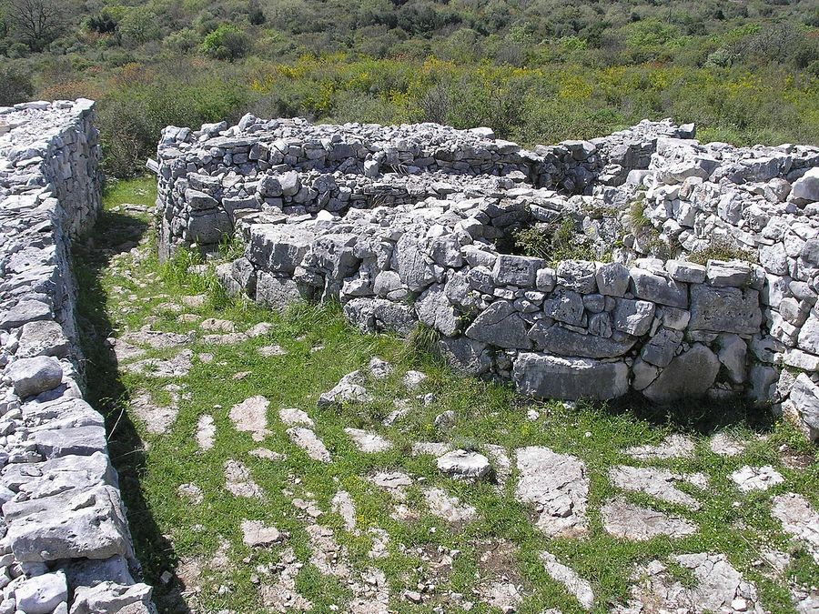
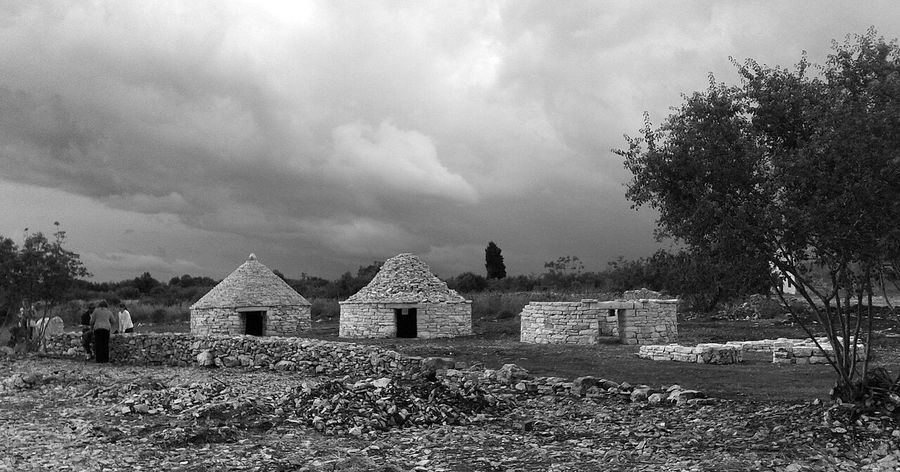
| Što je ostalo | Primjeri |
|---|---|
| Razmjerno dobro očuvani kasteljeri | Picugi kod Poreča, Nezakcij kod Pule, Brijuni, Monkodonja kod Rovinja |
| Gradine koje su odredile položaj i oblik kasnijih antičkih i srednjovjekovnih gradova | Pula, Boljun, Bale, Motovun, Beram, Barban, Labin, Kastav |
Istom suhozidnom tehnikom grade se i kuće: valjkaste građevine sa stožastim krovom od kamenih ploča, koje su se u poljima i vinogradima neprekinutom predajom održale do danas pod nazivima bunja, čemer ili kažun.
Kažun uz istarsku cestu i gradina na brijegu iznad njega isti su graditeljski postupak razmaknut tri tisuće godina. To je najkraći način da se gostu pokaže što znači „kontinuitet” — a ujedno poveznica s Modulom 6 (tradicijsko graditeljstvo).
Pismom počinje povijest — i na hrvatskom tlu s pouzdanim datumima: Grci iz Sirakuze utvrđuju se 390. pr. Kr. na Visu, a 384. ratuju sa starosjediocima zbog Hvara. Nakon raspada sirakuškoga carstva Issa (Vis) i Pharos (Stari Grad na Hvaru) osamostaljuju se kao gradovi-države; Issa potom osniva Korkyru Melainu (Korčula) te na obali Tragurion (Trogir), Salonu i Epetion (Stobreč).
Urbanistički je kontrast s domaćim svijetom potpun i vrlo zoran:
| Ilirska gradina | Grčka kolonija |
|---|---|
| Suhozid i „kiklopski” zid | Pravilno klesani kvadri s preciznim spojnicama |
| Organički tlocrt koji prati teren | Ortogonalna ulična mreža, pravokutni blokovi |
| Bez javnih građevina | Luka, trgovine, hramovi, teatar (Vis) |
Od grčke gradnje sačuvano je malo, a mnogo je neistraženo. Ostala su ipak djela vrhunske razine: brončana glava božice Artemide iz Isse (4. st. pr. Kr.), reljef Kairosa iz Trogira (bog „sretnoga trenutka” — kosa mu vijori sprijeda, a zatiljak je ćelav, jer se prilika ne može uhvatiti nakon što prođe) i niz nadgrobnih stela.
Najvrjedniji je trag ipak u zemlji, a ne u kamenu: Starogradsko polje na Hvaru, najbolje sačuvan antički grčki katastar na Sredozemlju, UNESCO-ova svjetska baština od 2008. (vidi Modul 5).
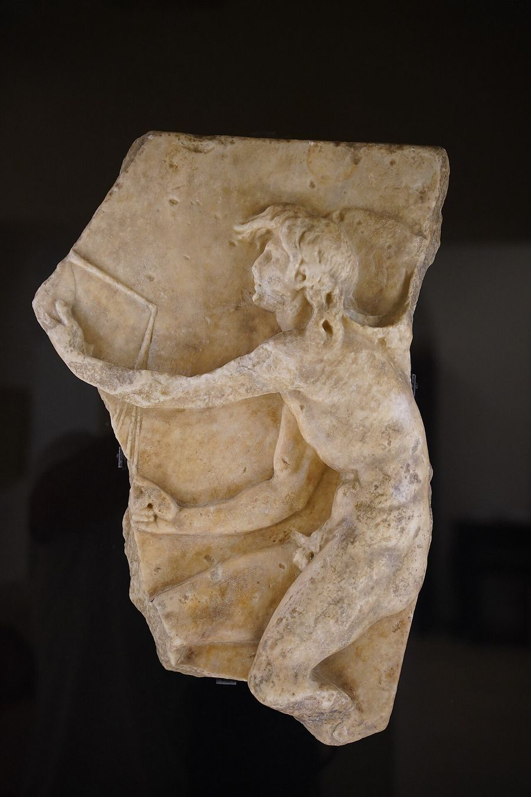
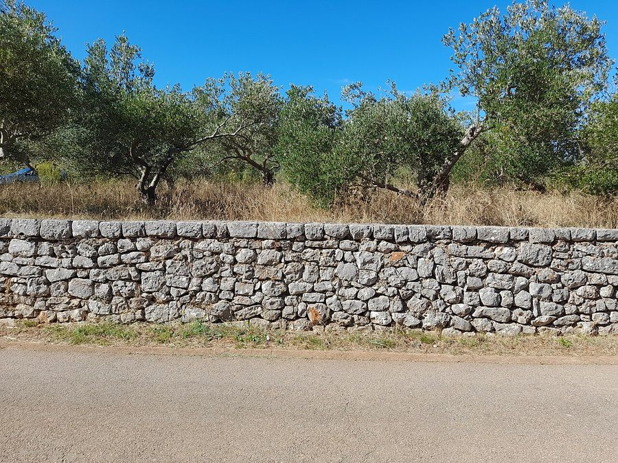
Nakon pada Nezakcija 177. pr. Kr. i konačnoga sloma ilirskoga otpora u prvim desetljećima po Kr., Rim provodi ono što grčka kolonizacija nikada nije — zahvat u cijelom prostoru, a ne u pojedinim enklavama.
Za vodiča su bitne četiri činjenice:
Rimska organizacija prostora — odnos grada i njegova agera — bila je sustavnija od bilo čega što je Europa ponovno postigla do 20. stoljeća. Kad gost pita „što su Rimljani ovdje zapravo napravili”, najtočniji odgovor nije „amfiteatar”, nego „organizirali su krajolik”.
Amfiteatar (1. stoljeće, dovršen u doba cara Vespazijana) jedan je od najbolje očuvanih rimskih amfiteatara i jedini u kojem su sačuvana sva četiri bočna tornja i cjelovit vanjski plašt s tri kata. Posebnost su podzemni hodnici, danas izložbeni prostor s postavom o antičkom maslinarstvu i vinarstvu — spoj koji izravno povezuje modul 1 i modul 7 ovoga udžbenika.
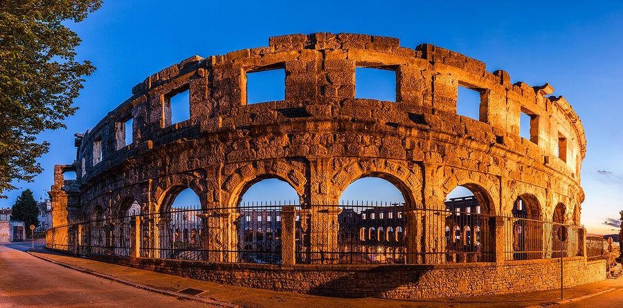
Pula ima izvanredno gustu antičku jezgru: Slavoluk Sergijevaca (oko 30. pr. Kr.), Augustov hram na forumu (podignut između 2. pr. Kr. i 14. po Kr.), Dvojna vrata, Herkulova vrata, ostatke dvaju kazališta i duge poteze gradskih zidina.
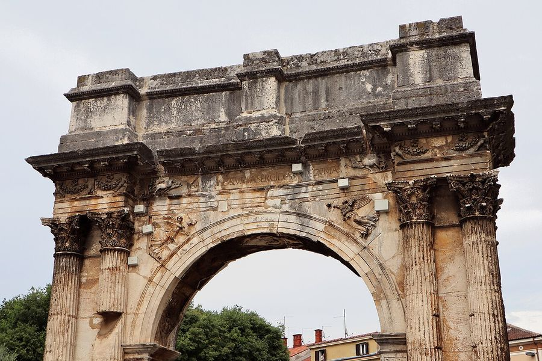
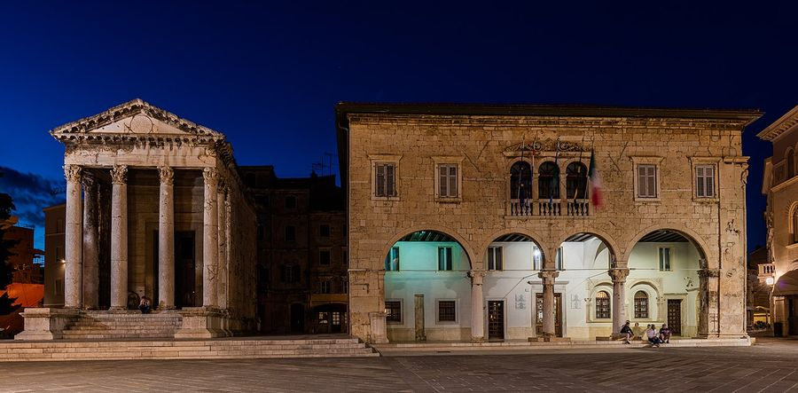
Slavoluk Sergijevaca nije samo lijepo očuvan spomenik — on je udžbenik iz kojega su učili europski arhitekti: crtali su ga i studirali Sangallo, Serlio, Michelangelo i Palladio u 16. stoljeću, a poslije Piranesi, Cassas i Adam. Njegov motiv vinove loze uz prolaz oponašao je već krajem 13. stoljeća klesar portala pulske franjevačke crkve — školski primjer kako antika djeluje na kasniju umjetnost na istom mjestu.
Salona (Solin) bila je glavni grad rimske provincije Dalmacije i najveći antički grad na hrvatskom tlu. Prema dimenzijama akvedukta, termi i amfiteatra procjenjuje se da je imala oko 40.000 stanovnika. Nastala je spajanjem grčkoga i rimskoga naselja — otuda joj ime u množini, Salonae.
Za povijest europske umjetnosti Salona je najvažnija zbog ranokršćanskoga sloja: biskupskoga središta (basilica urbana) i grobišnih kompleksa Manastirine i Marusinac, gdje su u 5. stoljeću nad grobovima mučenika iz 4. stoljeća — sv. Dujma (Domnius, prvi salonitanski biskup) i sv. Staša (Anastazije) — podignute monumentalne bazilike. Na tim se lokalitetima rješavaju pitanja važna za razvoj kršćanske arhitekture uopće: podrijetlo bazilike i utjecaj kulta mučenika na oblik sakralne građevine.
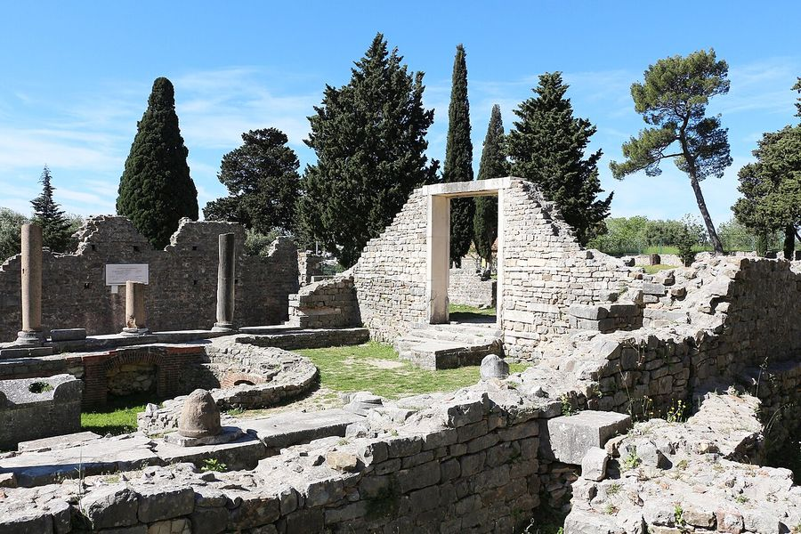
Dioklecijanova palača (oko 295.–305.) u Splitu spoj je carske rezidencije i vojnoga logora. Osnovni podaci koje polaznik mora znati:
| Podatak | Vrijednost |
|---|---|
| Površina | oko 38.000 m² |
| Tlocrt | pravokutnik približno 215 × 180 m |
| Obrana | zid s četverostranim kulama na uglovima i po dvije osmerostrane uz troja kopnena vrata |
| Kompozicija | dvije ukrštene ulice (cardo i decumanus); carske odaje uz more, srednja kultna zona, posada i posluga na sjeveru |
| Središnji prostori | Peristil, Vestibul (valjkasto predvorje s kupolom), Mauzolej (oktogonalni, danas katedrala sv. Duje), Mali (Jupiterov) hram (danas krstionica), dva okrugla hrama |
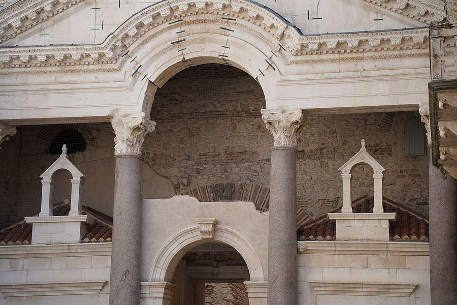
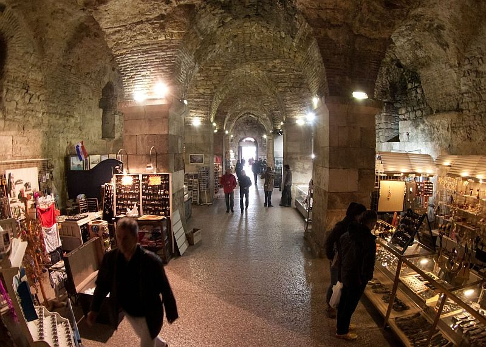
Ivančević je naziva priručnikom antičke graditeljske baštine: na jednom su mjestu okupljeni gotovo svi tlocrtni i konstruktivni oblici koje je antika poznavala — jednobrodni i trobrodni uzdužni prostori, kvadratni, kružni, četverokonhni, križni i osmerokutni tlocrti, polukružne i pravokutne niše, bačvasti i križnobačvasti svodovi, kupole. Izvrsno očuvane supstrukcije (podrumi) ponavljaju tlocrt razgrađenih carevih odaja iznad njih, pa omogućuju točnu rekonstrukciju gornjega kata.
Na plitkom trokutnom zabatu protirona — predvorja carskih odaja prema Peristilu — eklektički se spajaju vodoravna greda (arhitrav) i obli luk: dva konstruktivna načela i dva simbola, grčko i rimsko graditeljstvo, na istom zabatu. Taj će se motiv — luk upisan u trokutni zabat — pet stoljeća poslije ponavljati na zabatima predromaničkih oltarnih pregrada diljem Dalmacije. Antika ovdje nije uzor iz knjige, nego zgrada preko puta.
Mauzolej poganskoga cara koji je progonio kršćane postao je kršćanska katedrala posvećena sv. Dujmu, salonitanskom biskupu stradalom u tim progonima. To je jedna od najsnažnijih „obrata” u europskoj baštini i primjer kako se jednom rečenicom povezuju arhitektura, povijest i religija.
Zadar — forum s ostacima kapitolija (najveći forum na istočnoj obali Jadrana); Nin (Aenona); Narona (Vid kod Metkovića) s Arheološkim muzejom Narona, prvim muzejom in situ u Hrvatskoj, izgrađenim nad ostacima Augusteuma; Burnum kod Kistanja (vojni logor s ostacima amfiteatra, unutar NP Krka); Siscia, Mursa, Andautonija (Ščitarjevo); Aquae Iasae (Varaždinske Toplice) — rimsko termalno kupalište, najbolje istraženo antičko nalazište kontinentalne Hrvatske; ruralno naselje u uvali Verige na Brijunima.
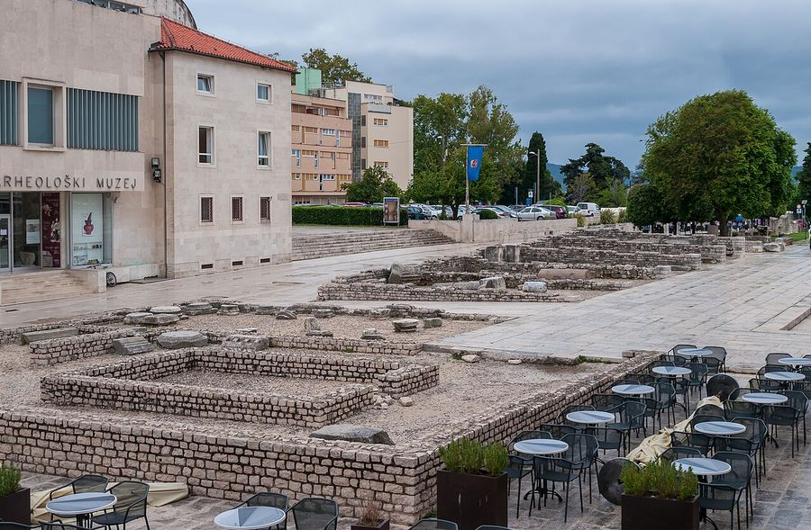
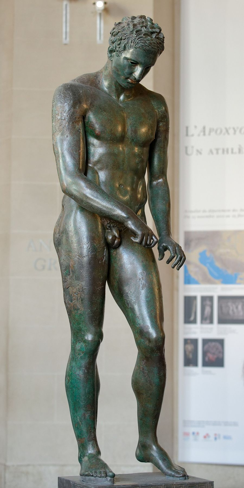
Hrvatski (lošinjski) Apoksiomen. Brončani kip atletičara iz 2. ili 1. st. pr. Kr., visok 192 cm, pronađen 1996. kod otočića Vele Orjule na dubini od oko 45 m, izronjen 27. travnja 1999., restauriran šest godina i predstavljen javnosti 2006. Od 30. travnja 2016. izložen je u namjenskom Muzeju Apoksiomena u palači Kvarner u Malom Lošinju. Sačuvano je osam antičkih inačica toga skulpturalnog tipa — atletičara koji sa sebe struže ulje, znoj i prašinu (apoxyesis).
Apoksiomen je najbolji hrvatski primjer za objašnjavanje podvodne arheologije i pravnoga postupanja s nalazom: nalaznik je bio turist-ronilac, nalaz je prijavljen Ministarstvu kulture, izronila ga je specijalna policija sa stručnjacima, a restauracija je trajala dulje od šest godina. Gost koji roni na Jadranu iz toga izlaska treba ponijeti jedno pravilo: nalaz se ne dira, nego prijavljuje.
Propast Zapadnoga Rimskog Carstva nije kraj antike. Nepuna tri desetljeća poslije Justinijan, car Istočnoga Rimskog Carstva, ponovno osvaja zapad i uspostavlja Ravennu kao novu zapadnu prijestolnicu (535.); usput, duž istočne obale Jadrana, podiže niz monumentalnih građevina.
Najbolje je očuvan biskupski kompleks Eufrazijeve bazilike u Poreču (6. stoljeće), UNESCO-ova svjetska baština od 1997. Kompleks je cjelovit, što je u Europi rijetkost:
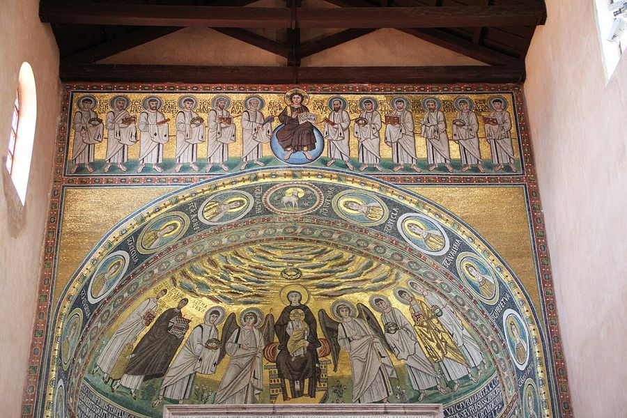
Dvije inovacije zbog kojih se Poreč mjeri s Ravennom:
Mozaici spajaju strogu, simetričnu kompoziciju frontalnih likova sa životnim pojedinostima: biskup Eufrazije kao donator drži model crkve, uz njega su arhiđakon Klaudije i njegov sin, likovi stoje na zelenoj tratini s naturalistički oblikovanim cvijećem, a nebo je zlatno, s mnoštvom šarenih oblaka. Donji su dijelovi apside obloženi raznobojnim mramorom i sedefom, lukovi arkada ukrašeni štukaturama.
Eufrazijeva se bazilika u starijim pregledima — pa i u prvoj cjelini propisane literature — omaškom datira u 4. stoljeće. Riječ je o 6. stoljeću, Justinijanovu razdoblju; tako stoji i u UNESCO-ovu obrazloženju upisa. Vodič navodi 6. stoljeće.
Razdoblje od 9. do 11. stoljeća donosi arhitekturu koja je specifično hrvatska i u europskim pregledima se navodi kao zaseban fenomen: malene crkve nepravilnih, često centralnih tlocrta, zidane grubo obrađenim kamenom, s izrazito plastičnim vanjskim volumenom i skromnim unutarnjim prostorom.
Sačuvano ih je ili arheološki istraženo stotinjak — razmjerno velik broj u usporedbi s graditeljskom baštinom drugih europskih naroda toga doba. Ta količina nije slučajna: pretpostavlja intenzivnu djelatnost velikoga broja domaćih majstora i radionica i oslonac na kvalitetu dalmatinskoga kamena, čiji su kamenolomi (Brač, Trogir, Korčula) bili poznati već u antici.
Prijelaz iz antike u srednji vijek najbolje se objašnjava na Splitu. Stanovnici razorene Salone ne obnavljaju svoj grad nego se naseljavaju u Dioklecijanovu palaču — manju, ali obranjiviju. To je jedna od najvažnijih razlika između antike i srednjega vijeka: promjena mjerila. Antička je palača dovoljno prostrana za cijeli srednjovjekovni grad.
Isti se obrazac ponavlja drugdje: stanovnici Epidaurusa (Cavtat) sklanjaju se na otočić Ragusium, koji će se poslije spojiti sa susjednim slavenskim naseljem i preuzeti njegovo ime — Dubrovnik.
Dva su splitska primjera „skromnosti mjerila” u predromanici izravno mjerljiva na terenu: prostori straže nad sjevernim i zapadnim vratima palače pretvoreni su u crkvice — u jednu je smještena kamena oltarna pregrada (sv. Martin), a nad drugom je podignut skromni zvonik (sv. Teodor, „Gospa od Zvonika”).
| Spomenik | Mjesto | Datacija | Obilježje |
|---|---|---|---|
| Crkva sv. Križa | Nin | 9. stoljeće | Slobodni križni tlocrt s kupolom; u turističkoj se promociji često naziva „najmanjom katedralom na svijetu” (popularni naziv, ne stručna kategorija); natpis župana Godečaja |
| Crkva sv. Donata | Zadar | poč. 9. stoljeća | Kružna, dvokatna, s ophodom; građena spolijima s rimskoga foruma; simbol grada |
| Crkva sv. Spasa | vrelo Cetine | 9. stoljeće | Sačuvan zapadni zvonik-westwerk; oblim kontraforima poduprti zidovi; trikonhalno svetište; okolno starohrvatsko groblje s više od tisuću grobova |
| Crkva sv. Trojice | Split (Poljud) | 9. stoljeće | Šesterolisni (heksakonhalni) tlocrt |
| Crkva sv. Nikole | Nin (Prahulje) | 11.–12. st. | Trolisna crkva na prapovijesnom humku; jedan od najprepoznatljivijih hrvatskih krajobraznih motiva |
| Crkva sv. Barbare | Trogir | 9.–11. st. | Trobrodna, s antičkim stupovima |
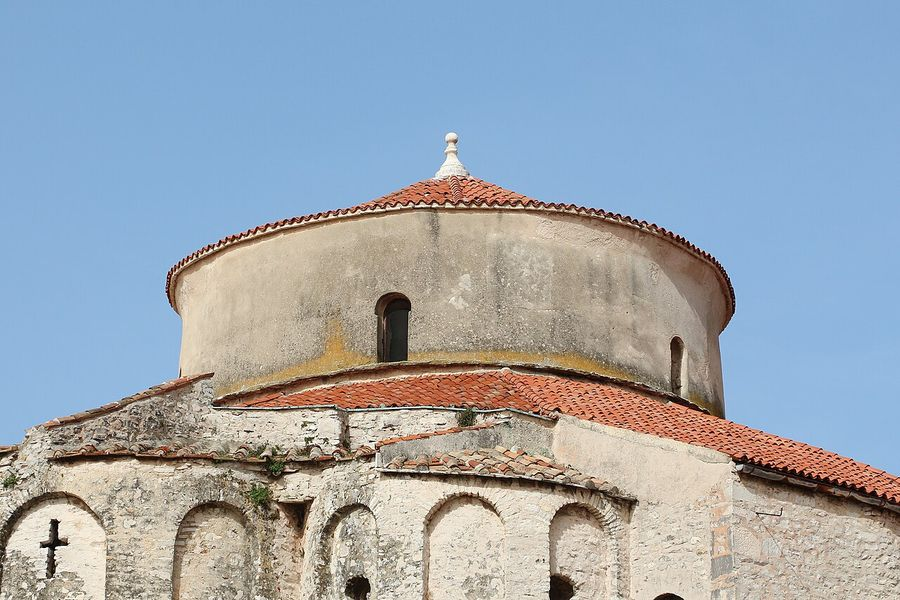
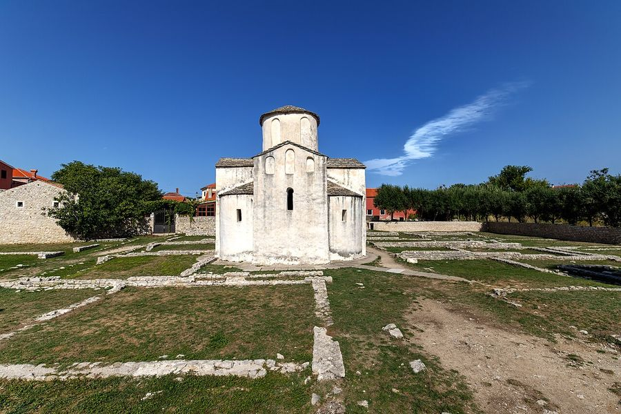
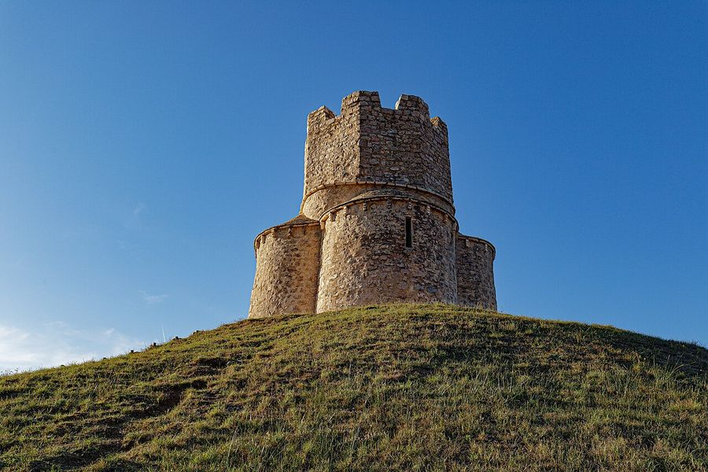
Zadarska rotonda nije samo najsloženija nego i najveća građevina toga tipa u europskoj predromanici: duga je dvadeset i tri metra, a visoka dvadeset i četiri (bez krova).
Europski kontekst koji vodič mora znati: po tipu monumentalne središnje građevine s galerijom na katu, sv. Donat odgovara carskim i kraljevskim crkvama — Justinijanovu San Vitaleu u Ravenni (6. st.) i dvorskoj kapeli Karla Velikoga u Aachenu (9. st.), gdje je vladarevo mjesto na galeriji nasuprot svetištu.
Zasebnu skupinu tvore crkve 9. stoljeća s moćnim zaobljenim kontraforima, zvonikom sred zapadnoga pročelja i narteksom s galerijom. Vezane su uz donacije i posjede hrvatskih vladara, pa su i znatnih dimenzija:
| Građevina | Tip i veličina |
|---|---|
| Sv. Spas na vrelu Cetine | jednobrodna, trikonhalno svetište; 21 m |
| Lopuška glavica kod Knina | jednobrodna, trikonhalno svetište |
| Sv. Cecilija u Biskupiji kod Knina | trobrodna; 33 m — daje predodžbu o monumentalnosti izgubljenih vladarskih crkava |
| Katedrala u Biogradu na moru | trobrodna |
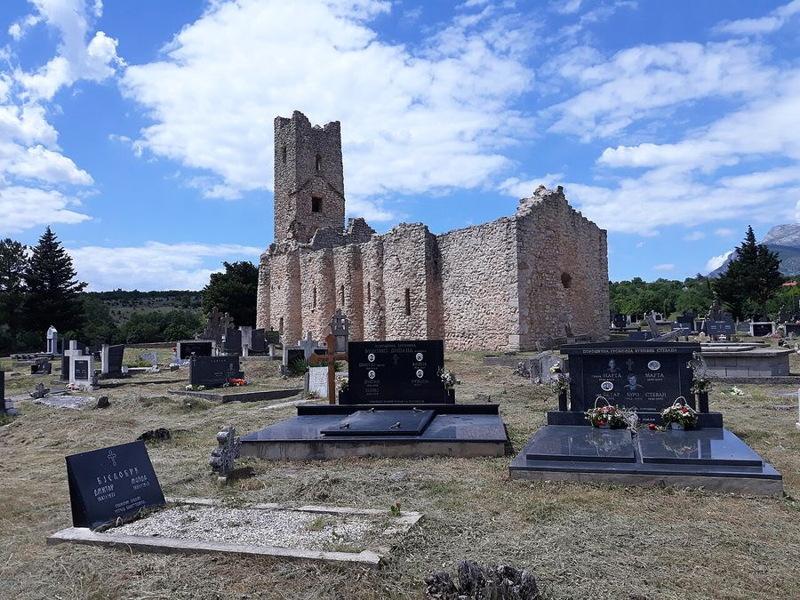
U ruševinama crkve sv. Stjepana „na Otoku” nađen je nadgrobni natpis kraljice Jelene († 976.); crkva je bila trobrodna, s narteksom u funkciji mauzoleja, galerijom nad predvorjem i dvjema kulama-stubištima sa strane — kao karolinške građevine. Uz nju su još dvije građevine:
Predromanički kameni namještaj (oltarne pregrade, ciboriji, pluteji, zabati) ukrašen je troprutastim pleterom — geometrijskim isprepletenim vrpcama. Na tim se natpisima pojavljuju imena hrvatskih vladara (Trpimir, Branimir, Držislav, Muncimir, Zvonimir), zbog čega je pleter istodobno umjetnički i povijesni izvor.
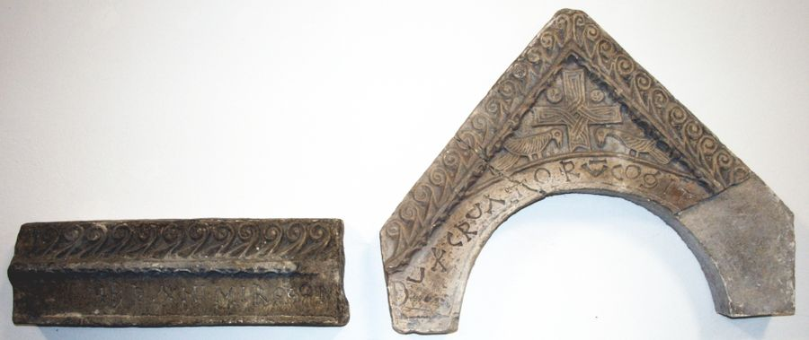
Za razumijevanje je ključno da pleter nije samo ukras nego sustav:
Gdje se pokazuje: Muzej hrvatskih arheoloških spomenika u Splitu (najveća zbirka), Arheološki muzej Zadar, Nin, Knin, Bribirska glavica.
Predromanički spomenici jedna su od rijetkih tema hrvatske povijesti umjetnosti oko koje traje otvorena znanstvena rasprava, i to dvostruka:
| Pitanje | Stajališta |
|---|---|
| Je li u oblikovanju ranosrednjovjekovne arhitekture bitna antička tradicija ili „barbarski” udio? | Teza kontinuiteta (bitna je antička tradicija) nasuprot tezi diskontinuiteta (udio takozvane barbarske umjetnosti) |
| Kako vrednovati nepravilnost i skromne formate? | Ljubo Karaman ističe originalnost i neovisnost crkvica „slobodnih oblika”; Mladen Pejaković u svakoj nepravilnosti čita složeno značenje i savršenstvo projektantske zamisli; dio literature u njima vidi samo rustičnost izvedbe |
Nepravilnost ovih crkvica gotovo uvijek izazove pitanje „zar nisu znali bolje?”. Točan odgovor nije obrana ni isprika, nego činjenica: o tome se u struci raspravlja stoljeće, i to je dio zanimljivosti. Vodič smije reći „prema jednom tumačenju…, prema drugom…”. Ne smije izabrati jednu stranu i predstaviti je kao utvrđenu.
Romanika je u Dalmaciji vezana uz procvat komuna i uz obnovu biskupija. Obilježja: polukružni luk, masivni zid, bazilikalni tlocrt, zvonik uz pročelje ili bok, arkadice pod krovnim vijencem, portali s postupno uvučenim stupićima.
Dvije velike faze: ranu romaniku druge polovice 11. stoljeća širi reformirano benediktinstvo (tip trobrodne bazilike sa stupovima i tri polukružne apside, od Istre do krajnjega juga), a zrela romanika 12. i 13. stoljeća doba je katedrala.
Romanici zahvaljujemo prvu srednjovjekovnu monumentalnu izgradnju gradova na istočnom Jadranu, i to s novom kvalitetom stambene arhitekture. To je za vođenje neprocjenjivo, jer se pokazuje na svakoj ulici, a ne samo na katedrali.
| Obilježje | Kako izgleda |
|---|---|
| Zidanje | Sitni, grubo klesani kvadar u pravilnim redovima; glatko klesani okviri otvora |
| Otvori | Monofore i bifore srpastoga luka; vrata s lunetama |
| Podjela pročelja | Profilirani razdijelni vijenci katova, konzole, imposti čistih stereometrijskih oblika |
| Namjena po etažama | Prizemlje gospodarsko (konoba, radionica, trgovina, katkad štala); kat stambeni; kuhinja pod krovom — jer se dimnjaci nisu gradili |
| Trgovački detalj | „Dućan na koljeno” — vrata i prozor konstrukcijski spojeni istim lukom |
Takvih je kuća, pretežno iz 13. stoljeća, registrirano oko pedesetak u Splitu i isto toliko u Trogiru, a nalaze se od Poreča i Pule preko Raba i Zadra do Dubrovnika. Monumentalna pročelja s golemim biforama sačuvana su u Trogiru; složenija prostorna organizacija s dvostrukim portalima, prolazima u dvorište i potkrovnim ložama u Zadru.
Od javnih i kanoničkih zgrada ističu se cjelovito sačuvana kanonička kuća u Poreču (1270.) s nizom od šest mramornih bifora (svaka odgovara jednoj ćeliji) te kasnoromaničko-gotička komunalna palača u Puli (1290.–1296.).
Kad skupinu vodite kroz Trogir ili Split, najkorisnije je prvo naučiti ih čitati kat: bifora srpastoga luka i razdijelni vijenac znače 13. stoljeće; šiljati luk s četverolistom znači 14.–15.; polukružni luk s kaneliranim pilastrima znači renesansu. Nakon toga gost sam datira ulicu — i to je najuspješniji mogući ishod obilaska.
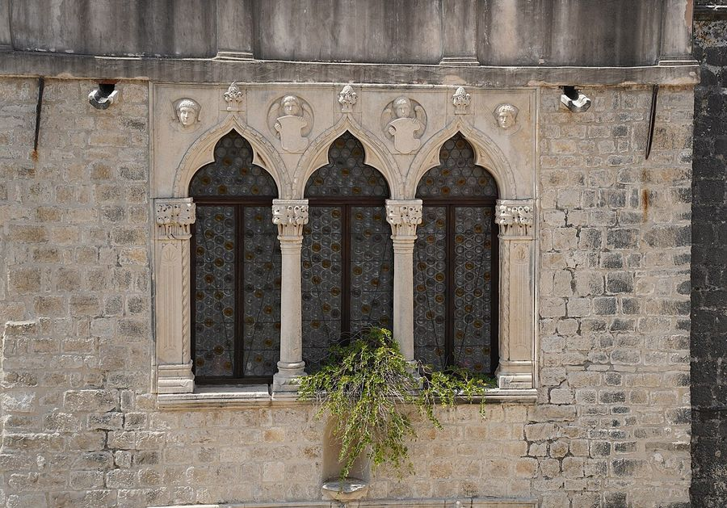
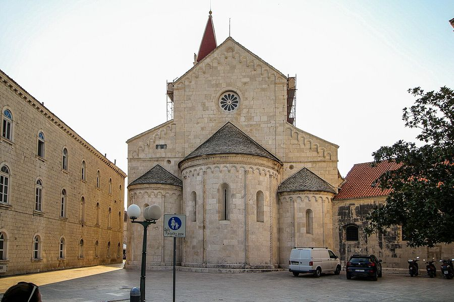
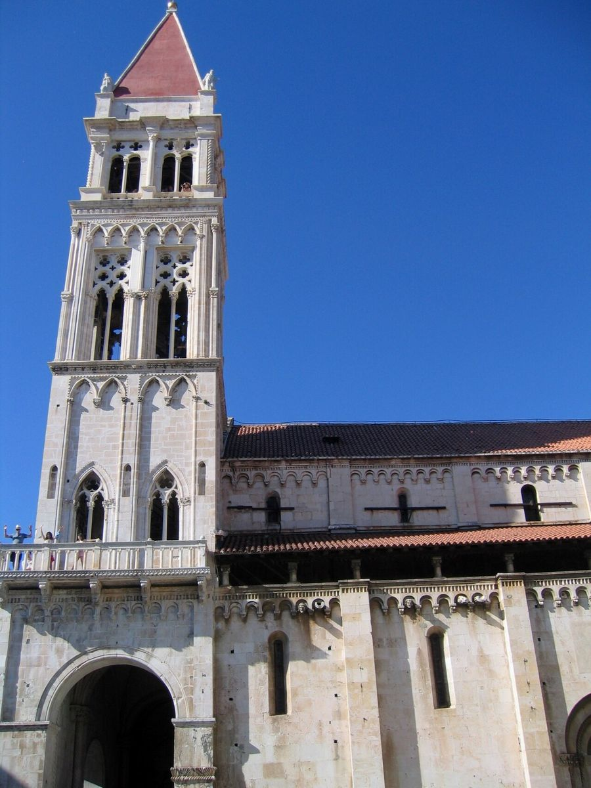
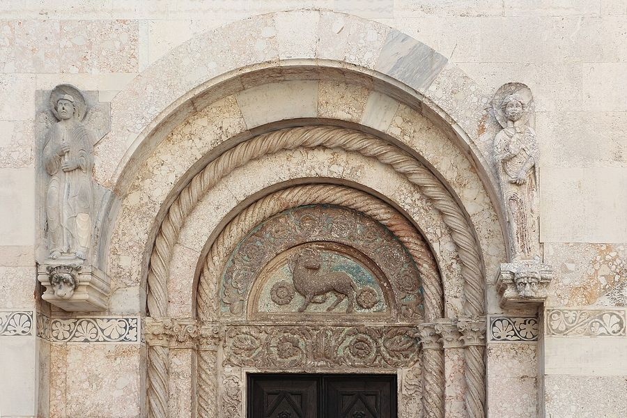
Dvije najvažnije romaničke katedrale propale su: zagrebačka 1242. u provali Tatara (izvor kaže da je pretvorena „u prah i pepeo”, in cinerem versa), a dubrovačka predromaničko-romanička u potresu 1667. Vodič to spominje jer objašnjava zašto na tim mjestima danas stoje gotička odnosno barokna katedrala.
Na Jadranu gotika stiže preko Venecije i miješa se s domaćom tradicijom u tzv. „cvjetnu gotiku”; u kontinentalnoj Hrvatskoj javlja se srednjoeuropska gotika.
Kao što su ranu romaniku širili benediktinci, ranu gotiku krajem 13. i početkom 14. stoljeća šire franjevci i dominikanci — od Istre do krajnjega juga Dalmacije. Njihove su crkve jednobrodne dvorane drvenoga stropa s kvadratičnim, rebrasto svedenim svetištem: krajnje jednostavne, određene novom namjenom i ideološkim programom propovjedničkih redova.
Najmonumentalniji cjelovito očuvani primjer je franjevačka crkva u Puli: golema dvorana 12,5 × 34,5 m, otvorene krovne konstrukcije, glatkih zidova, jarko osvijetljena visokim prozorima; tri šiljata trijumfalna luka na istočnom zidu djeluju kao monumentalni triptih.
Propovjedaonica nije uz svetište (kako je bilo prije i kako će opet biti poslije), nego postrance, na sredini južnoga zida broda — kao balkon iznad glava slušatelja i usred njih. Time se žarište prostora funkcionalno premješta poprečno u odnosu na svetište, pa je „dvoranski” karakter ostvaren više funkcijom nego tlocrtom. S istoga je podesta propovjednik mogao izaći i na vanjsku propovjedaonicu kad se okupilo više ljudi nego što ih je moglo stati u crkvu.
Urbanistička logika koju vodič može pokazati na karti: propovjednički su redovi, za razliku od asketskih, gradili uz gradska vrata — na mjestima najživljega protoka ljudi, uz koje im je pripadala i funkcija nadzora ulaza. Najčišći primjer je Dubrovnik: franjevci uz zapadna, dominikanci uz istočna vrata.
Ostali primjeri: Zadar — franjevačka i dominikanska crkva posvećene iste 1280.; dva propovjednička sklopa u Splitu; dominikanska crkva u Dubrovniku (od 1301.) i crkva sv. Jeronima u Rijeci (1315.) već s razvijenijom peterostranom apsidom (tip 5/8).
Klaustar Male braće u Dubrovniku — djelo Mihoja Brajkova iz Bara. Lukovi su obli, ali klaustar odgovara gotičkom oblikovanju: heksafore na dvojnim osmerostranim stupićima (koji umnažaju vertikale i pojačavaju kontrast svjetla i sjene), izdužene proporcije otvora i okrugli otvori s četverolatičnim mrežištem nad heksaforama. Na kapitelima se uz romanički fantastični bestijarij (krilati zmajevi, himere, orolavovi) javljaju i gotički realistički likovi: volovske i ovnovske glave, četiri psića, orao s dva orlića, jastreb koji napada zeca, žene s maramama i muškarci s kapama s naušnicima.
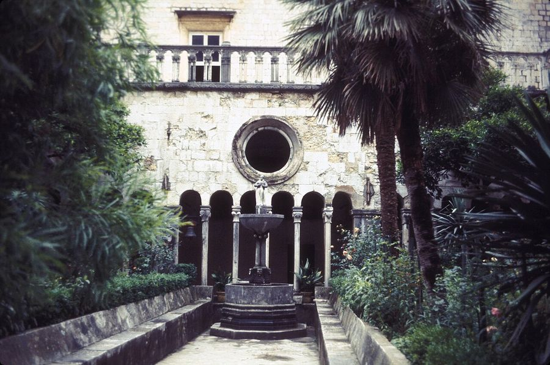
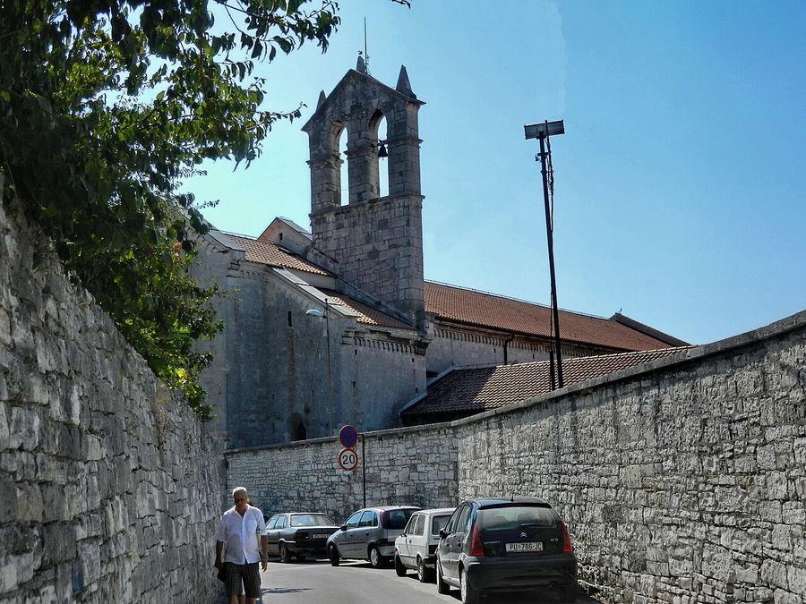
Četrnaesto je stoljeće na Jadranu karakteristično nova faza u razvoju gradova, pa se gotika ovdje ne čita samo na građevinama nego i na tlocrtu grada:
Dubrovački statut je najbolji hrvatski primjer da se gostu objasni što znači „upravljanje gradom” prije modernoga doba — i najelegantniji uvod u današnju raspravu o upravljanju posjetiteljima (Modul 5). Grad koji je 1415. imao plaćene čistače ulica danas raspravlja o broju posjetitelja po satu; riječ je o istoj vrsti odluke, u razmaku od šest stoljeća.
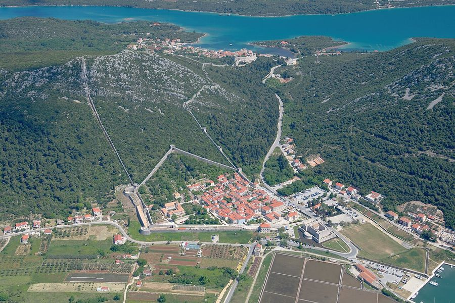
| Oblik kule | Razdoblje |
|---|---|
| Okrugle kule | romanika (12.–13. st.) |
| Kvadratične prizme, visoke | gotika (14. st.) |
| Okrugle, niže i masivnije, za vatreno oružje | renesansa (16. st.), uz bastione za obranu topovima |
Gotičke prizmatične kule oblikovale su prvi prsten dubrovačkih zidina na sjevernoj i zapadnoj strani, a i danas daju vertikalni naglasak istarskim gradićima — Humu, Balama, Motovunu — gdje dvojnom funkcijom kule-zvonika izravno iskazuju skromne gospodarske uvjete života.
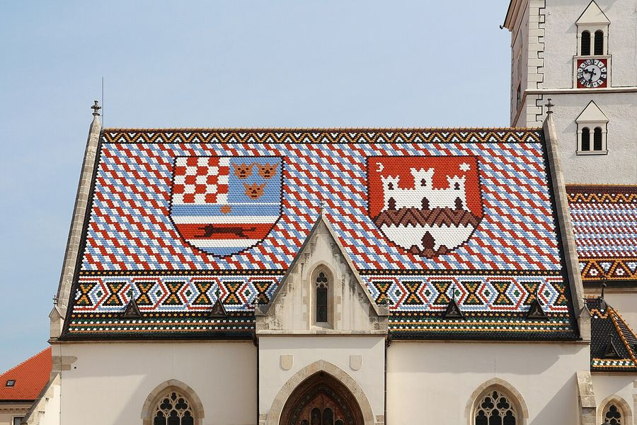
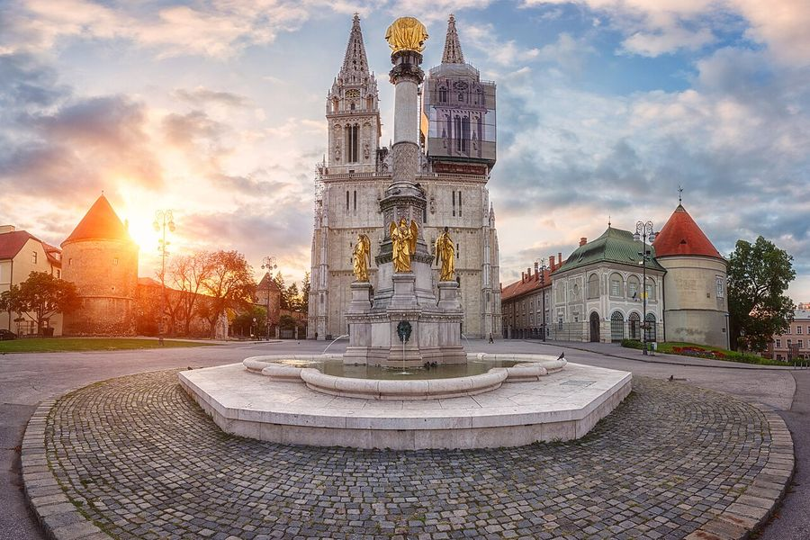
Renesansa u Hrvatskoj ima dva žarišta: Dalmaciju (osobito Šibenik, Trogir, Hvar, Korčulu) i Dubrovnik kao samostalnu republiku.
Početak renesanse na istočnoj obali Jadrana označuje 1441. godina — dolazak Jurja Dalmatinca na šibensku katedralu. To je samo dvadesetak godina nakon djela koja u europskoj povijesti označuju početak novoga stila: Brunelleschijeve kupole (1420.–1434.), Masacciove freske sv. Trojstva (1428.) i Gentskoga oltara braće van Eyck (1432.).
Renesansa se u početku ne javlja u „čistom” obliku nego pomiješana s gotikom. Mješoviti gotičko-renesansni stil nije regionalna pojava nego općeeuropska. Petnaesto stoljeće znači, nakon antike, možda najveći intenzitet likovne djelatnosti na istočnoj obali i otocima.
Podižu se nove gradske četvrti i planirani gradovi (Pag, utemeljen 1443.); obnavljaju se zidine i kule (osobito Dubrovnik, Korčula, Hvar); grade crkve, samostani, klaustri i zvonici; podižu vijećnice, kneževi dvori i javne lože i u zabitnim selima; sagrađene su stotine kamenih kuća i palača s klesanim okvirima, balkonima, grbovima, kaminima, ugrađenim ormarima i umivaonicima; sade se vrtovi s odrinama na kamenim stupovima, fontanama i ribnjacima. Sve je to podjednako graditeljsko i klesarsko umijeće, jer se na istočnom Jadranu gradi gotovo isključivo kamenom — za razliku od Venecije, gdje se izvorno gradilo opekom.
Najvažnija hrvatska građevina prijelaza gotike u renesansu i UNESCO-ova svjetska baština od 2000. Graditelji: Juraj Dalmatinac (od 1441.) i, nakon njegove smrti, Nikola Firentinac (protomagister od 1475. do smrti 1505.).
Tri obilježja koja moraju ostati u pamćenju polaznika:
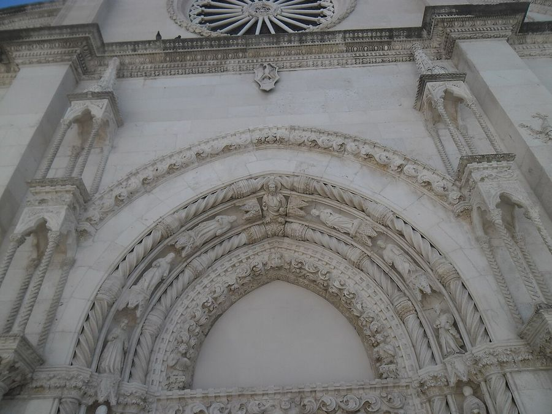
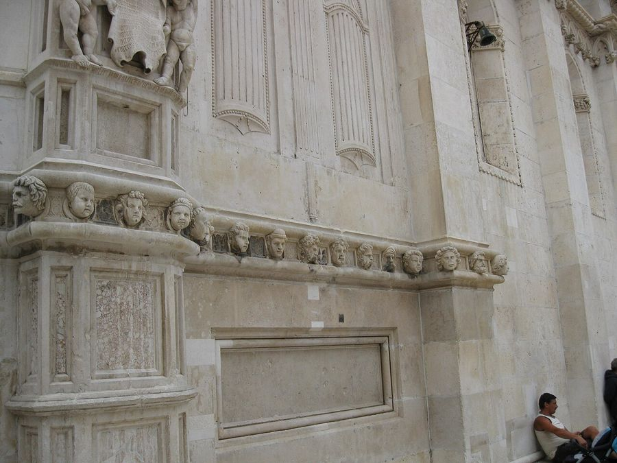
Katedralna je skulptura tradicionalno bila grupirana oko portala, na pročelju. Ovdje je težište prebačeno na apside, na začelje — i to s posve profanim sadržajem na sakralnom objektu, u neposrednoj vezi s prolaznikom, bez obzira ulazi li on u crkvu. Podrijetlo takve zamisli može se naći samo u profanoj arhitekturi (glave na kapitelima trijema Duždeve palače). Najbliža joj je usporedba u slikarstvu Bičevanje iz Urbina Piera della Francesce (1444.), gdje je glavni prizor potisnut u pozadinu, a u prvom su planu portreti suvremenika. Na obje je „izvrnuta” perspektiva gledanja i čovjek stavljen u prvi plan.
Krstionica Jurja Dalmatinca — prostor iznimne kamenoklesarske virtuoznosti i ujedno ikonografska inovacija: umjesto Krštenja Kristova, koje se na tom mjestu prikazivalo od 5. stoljeća, na svodu je lik Boga Oca s golubicom, a umjesto Krista u Jordanu — novorođenče koje u posudi krsti svećenik. Zamjena božanskoga lika ljudskim bila je moguća samo u humanističkom ozračju rane renesanse.
Utjecaj. Trolisno se pročelje ponavlja u nizu crkava od Istre do Dubrovnika (katedrala u Osoru, započeta 1460-ih; sv. Marija u Svetvinčentu, 1555.; renesansno pročelje sv. Marije u Zadru), ali nigdje više kao strukturalna veza s prostorom — svugdje drugdje takva pročelja kulisno prikrivaju obične bazilike. Isto vrijedi i na suprotnoj obali Jadrana (San Zaccaria, Or San Michele u Veneciji).
Prva građevina isključivo ranorenesansnoga stila u Dalmaciji, bez tragova gotike — djelo Nikole Firentinca i Andrije Alešija prema ugovoru iz 1468. Prigrađena je sa sjeverne strane trogirske katedrale (gradnja 1468.–1482., kiparska oprema do 1497.).
| Podatak | Vrijednost |
|---|---|
| Tlocrt | izvana kvadratičan, iznutra pravokutnik omjera 4:3; s visinom čini 3:4:6 — odnos koji Alberti naziva „harmonijskim” |
| Uzor za format i svod | antički Mali (Jupiterov) hram Dioklecijanove palače |
| Reljefi putta-bakljonoša | 21, izviruju iz „odškrinutih” vrata (antički funeralni motiv) |
| Putti-telamoni koji nose vijenac | 16 |
| Glavice serafina u kasetama svoda | 96 |
| Kipovi apostola i svetaca u nišama | 11 sačuvanih (izvorno 16) |
Kapela je grobnica — ali je istodobno vrhunac humanističkoga optimizma: iz nje „gleda” oko 160 dječjih lica. Nema zida: stranice su razvedene sustavom niša, a reljefi nisu pričvršćeni na zid nego su, dosljedno Jurjevoj montažnoj metodi, sastavni dio zida — od njih je kapela sazdana. Čak je i oltar „ugrađen”, isklesan u kamenu poput reljefnoga triptiha s dva otvorena krila. Takav odnos skulpture i arhitekture u oblikovanju interijera europska će umjetnost razviti tek u visokoj renesansi, u sljedećem stoljeću.
U kapelu su umetnute i dvije skulpture Ivana Duknovića: potpisani i klasično odmjeren sv. Ivan (1485.) te sv. Toma (1506.).
Nikola Firentinac došao je iz Italije, ali je u Trogiru napustio toskansku praksu miješanja materijala (freske, bronca, keramika) i prihvatio Jurjeva načela jedinstva kamene građe i montažne konstrukcije. Kapela je dakle organički nastavak domaće dalmatinske tradicije, iako joj je autor stranac — podatak koji uredno pobija svaku jednostavnu podjelu na „naše” i „uvezeno”.
Dubrovnik je najcjelovitiji sačuvani povijesni grad na hrvatskoj obali i UNESCO-ova svjetska baština od 1979. (proširenje 1994.). Za vođenje su ključne četiri točke:
| Građevina | Datacija | Napomena |
|---|---|---|
| Gradske zidine | 13.–17. st. | Oko 1.940 m opsega; utvrde Minčeta, Bokar, sv. Ivan, Revelin, Lovrijenac |
| Knežev dvor | 15. st., više obnova | Gotičko-renesansni; sjedište kneza; danas Kulturno-povijesni muzej |
| Palača Sponza (Divona) | 1516.–1522. | Spoj gotike i renesanse; carinarnica, kovnica, danas Državni arhiv |
| Stradun (Placa) | nakon 1667. | Jedinstveno pročelje nastalo nakon potresa, po propisanom obrascu — rani primjer planske obnove grada |
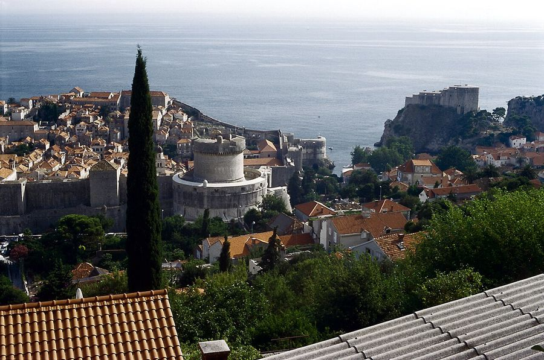
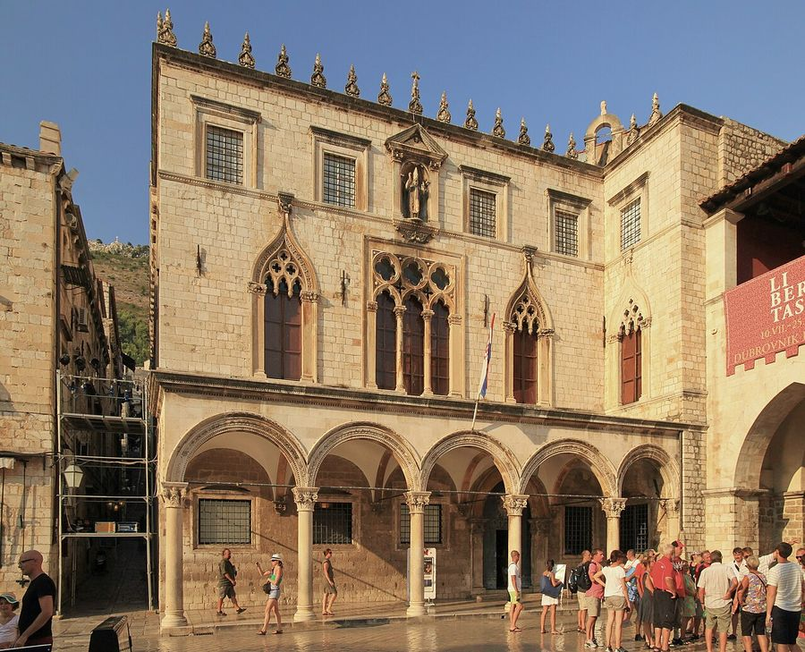
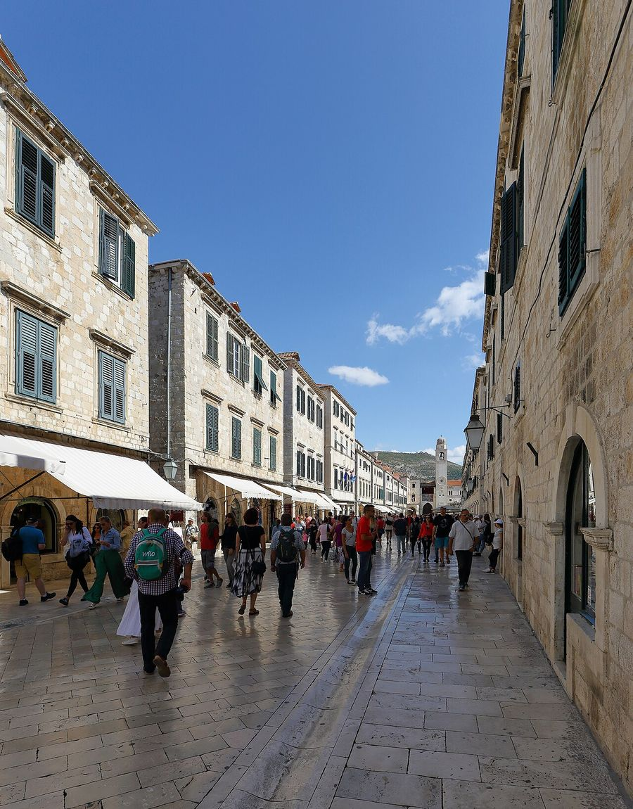
Kao i u šibenskoj krstionici, u prizemlju dominira „mlađi” stil, a na katu „stariji” — samo što ovdje to nije bilo simultano projektirano nego je posljedica sukcesivne gradnje. Obnovu dvora, oštećenoga eksplozijom baruta (1463.), započeo je Michelozzo Michelozzi renesansnim arkadama u prizemlju, a dovršili su je gotičkim biforama na katu domaći graditelji (Bogosalić, Grubačević, Bogojević, Radosalić). Michelozzo je u Dubrovniku boravio 1461.–1464. i započeo obnovu zidina: visoke gotičke kvadratične kule, građene za obranu hladnim oružjem, opasao je niskim predziđem — bastionima s terasama za topove. Na najistaknutijem vrhu zidina projektirao je Minčetu, kojoj je konačni oblik dao Juraj Dalmatinac.
Uz njih: franjevački samostan s klaustrom i ljekarnom iz 1317., dominikanski samostan, Onofrijeve česme (1438.), Lazareti na Pločama.
Uz šibensku katedralu i trogirsku kapelu, ljetnikovci su treći hrvatski doprinos europskoj renesansnoj arhitekturi — i, za razliku od prva dva, gotovo posve nepoznat izvan struke. Na području Dubrovačke Republike bilo ih je oko osamdeset; grade se tijekom 15. i, osobito, 16. stoljeća.
Tipična obilježja:
Ljetnikovac Petra Sorkočevića na Lapadu (1521.), u gruškoj luci, jest najrazvedeniji i najbolje sačuvan; danas je u njemu Zavod HAZU. Uobičajeni L-tlocrt ovdje je razrađen u četiri krila u dva L-sustava: dva uokviruju ribnjak i otvaraju se trijemom na perivoj, druga dva patio na drugoj strani.
Asimetričnost Sorkočevićeva ljetnikovca prividno je antirenesansna, jer je simetrija formalno načelo renesansne arhitekture. Ali odstupanje je posljedica projektiranja prema potrebi korisnika — riječ je o funkcionalnoj asimetriji, oblikovanju iznutra prema van, dinamičkoj umjesto formalnoj ravnoteži. Takvo rješenje nema odjeka u europskoj arhitekturi sve do modernoga doba. Datum gradnje pritom se poklapa s trenutkom klasične renesanse u Italiji.
Ostali: Skočibuhini na Šipanu (1560.–1580.), pjesnički ljetnikovci na Hvaru (Lucić, Hektorović) i Visu (Gazarović), prigradski Pucićev i Betondićev kraj Dubrovnika.
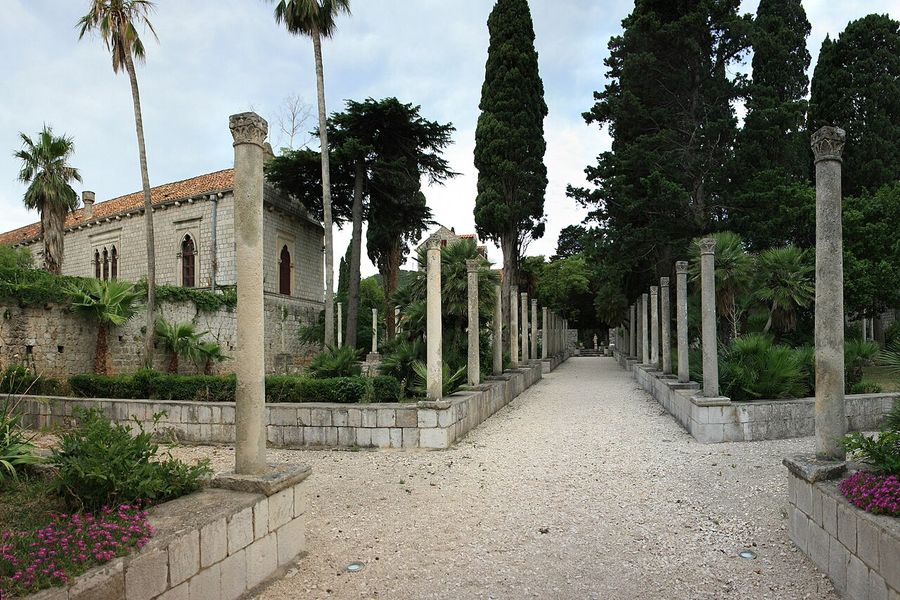
Specifičnost hrvatske baštine 16. stoljeća prema europskoj jest podjela zadataka po regijama. Povijesna je nužnost umjesto univerzalnosti nametnula podvojenost: profana i sakralna arhitektura razvijaju se u Dalmaciji, a fortifikacijska u sjevernoj Hrvatskoj. Zemlja je svedena na trećinu nekadašnjega teritorija i u trajnom je ratu stotinu godina — od Krbave 1493. do Siska 1593. (vidi K1, modul 3).
| Građevina | Podaci |
|---|---|
| Karlovac (1579.) — renesansni „idealni grad” | Pravilan šesterokut s trokutnim bastionima koji tvore šestokraku zvijezdu; utemeljio ga nadvojvoda Karlo na posjedu Zrinskih; gradio Matija Gambon. Stajao je 845.000 forinti, a financirali su ga gotovo svi europski vladari. Za razliku od radijalne Palmanove (petnaestak godina mlađe), unutar šesterokuta je pravokutni raster ulica s pravokutnim trgom u sredini. Šančevi su 1886. pretvoreni u perivoje, ali je „zvijezda” zadržana do danas |
| Veliki Tabor | Originalni ovalni oblik s pet velikih polukružnih kula; građen za obitelj Ratkaj početkom 16. st.; dvorište rastvoreno polukružnim arkadama s toskanskim stupovima na dva kata |
| Kaptolska tvrđa u Zagrebu (1513.–1521.) | Visoki zid s pet okruglih kula oko nedovršene katedrale — renesansa koja se u Zagrebu izražava fortifikacijom |
| Sedam Kaštela | Utvrđena sela između Splita i Trogira, građena tijekom 15. i 16. st.; nazvana po kaštelima feudalaca |
| Michele Sanmicheli | Kopnena vrata u Zadru (1543.) i tvrđava sv. Nikole pred Šibenikom (1547.) |
Uz njih: Čakovec, Trakošćan, obnova Medvedgrada (J. Arkonati, 1574.) i Nehaj-grad kraj Senja (1558.).
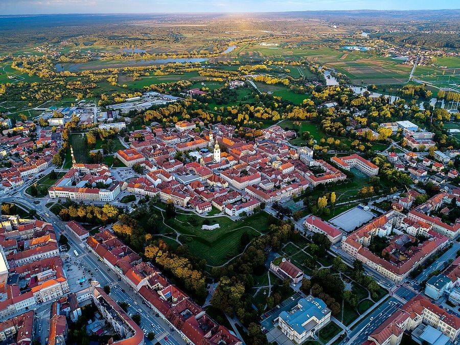
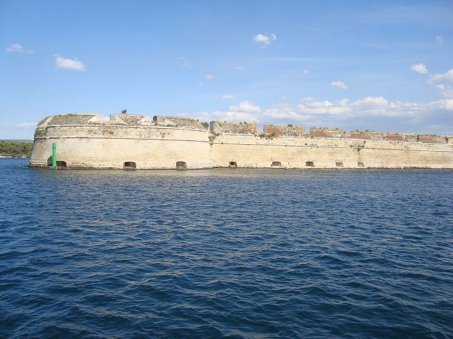
Hvar — Arsenal s kazalištem iz 1612., jednim od najstarijih komunalnih kazališnih prostora u Europi; Korčula; Šibenik — tvrđava sv. Nikole na ulazu u kanal sv. Ante, dio UNESCO-ova upisa „Venecijanski obrambeni sustavi 16. i 17. stoljeća” (2017.), zajedno sa zadarskim sustavom obrane s kopnenim vratima.
Najvažnija promjena baroknih stoljeća nije stilska nego zemljopisna: dok na obali postupno nastupa regresija, na sjeveru — nakon stravičnoga uništavanja u 16. stoljeću — počinje obnova. Karlovački mir 1699. označuje novu granicu, a sjever se gospodarski, kulturno i umjetnički oporavlja sve jačim intenzitetom.
Politička podjela određuje i umjetničke tokove: uski obalni pojas (osim Dubrovačke Republike) drži Venecija, pa ondje dominiraju mletački utjecaji; kontinentalna Hrvatska u habsburškom je okviru, pa ondje dominira srednjoeuropska umjetnost.
U 17. stoljeću u sjevernoj Hrvatskoj gotovo nema domaćih imena među projektantima, kiparima, slikarima, štukaterima i rezbarima — to su najčešće Talijani i Austrijanci, uz Slovence. Autohtone vrijednosti toga doba zato nisu pojedinačna djela nego cjeline: urbani ambijenti, trgovi, ulični prospekti, dvorci s perivojima, crkve s cinktorima.
Po totalnoj intervenciji u prostoru barok je, unatoč formalnim suprotnostima, najsrodniji rimskoj antici: nastoji prožeti cijeli čovjekov okoliš jedinstvenim duhom — od perivoja iza dvorca, preko slikovito vođenih cesta, kapelica i pilova u pejzažu i drvoreda, do srebrnoga posuđa na stolu. To je najbolji okvir za barokni dio programa: ne obilazimo zgrade, nego uređeni svijet.
| Grad | Stanovnika (18. st.) |
|---|---|
| Dubrovnik | oko 20.000 |
| Split | oko 12.000 |
| Zagreb | oko 7.000 |
| Varaždin | oko 5.000 |
Odnos je, dakle, tri do četiri puta u korist juga — suprotno današnjoj slici. To je najbrži način da se gostu objasni zašto Dubrovnik ima baroknu katedralu, a Zagreb je barok dočekao kao gradić.
Kao što su ranu romaniku širili benediktinci, a ranu gotiku prosjački redovi, ranobarokni tip crkve šire isusovci, prema matičnoj rimskoj crkvi Il Gesù: monumentalni jednobrodni prostor s kupolom pred svetištem, bačvasti svod sa susvodnicama, dva niza bočnih kapela orijentiranih prema brodu, unutrašnjost raščlanjena pilastrima i snažnim vijencem, bogata štuko-dekoracija i iluzionističke freske.
Uz crkvu redovito ide i kolegij — učilište namijenjeno plemstvu, iz kojega se razvija visoko školstvo. Najznačajniji su projekti početkom 17. stoljeća u Zagrebu i Rijeci, a krajem stoljeća u Dubrovniku.
Crkva sv. Katarine u Zagrebu projektirana je u duhu srednjoeuropskoga ranog baroka (H. Alberthal) i najmonumentalniji je spomenik isusovačke arhitekture u sjevernoj Hrvatskoj:
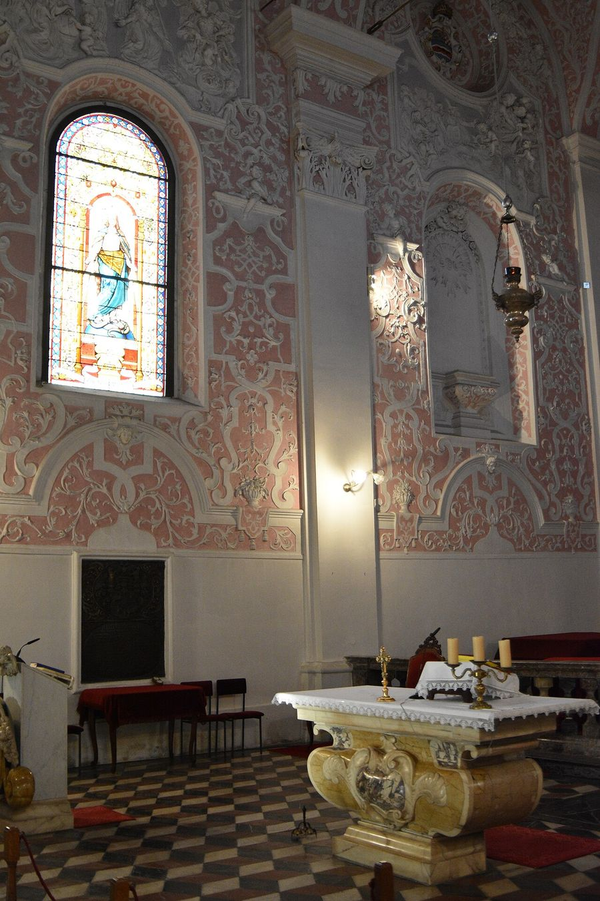
Specifičan postupak 17. stoljeća: jednobrodnoj gotičkoj crkvi s poligonalnim svetištem prigrađuje se po jedna kapela sa sjeverne i južne strane broda. Time se povećava obujam, dobivaju dva nova oltara, a — osobito kad su kapele polukružne — novi tlocrt odgovara temeljnim načelima baroknoga oblikovanja: križni raspored umjesto uzdužne usmjerenosti naglašava centripetalni karakter prostora.
Primjeri: Taborsko, Zajezda, Remetinec, Pozorje; Lepoglava je u 17. stoljeću asimetrično proširena dvjema kapelama, a zatim joj je produžena lađa.
Barokizacija je razlog zbog kojega tolike „barokne” crkve sjeverne Hrvatske iznutra imaju gotičko svetište sa zvjezdastim svodom. To nije nedosljednost nego čitljiv slijed: gost koji nauči podignuti pogled prema svetištu vidjet će ispod baroknoga sloja stariju crkvu.
Katastrofalni potres 1667. potaknuo je u posljednjoj četvrtini stoljeća iznimno živu graditeljsku djelatnost u već potpuno izgrađenom renesansnom gradu. Ta obnova znači urbanistički preobražaj, i po dometu još jednom, posljednji put, postavlja Dubrovnik na vrh hrvatske spomeničke baštine. Za razliku od renesanse, koju ostvaruju domaći majstori, u baroknoj je obnovi udio talijanskih graditelja velik.
| Građevina | Autor i datacija |
|---|---|
| Nova katedrala | Podignuta na podnožju romaničke; trobrodna, s upisanim transeptom i visokom kupolom nad križištem |
| Isusovačka crkva | Ignazio Pozzo, 1699.–1725.; graditelj i slikar isusovačkih crkava u Rimu (S. Ignazio), Beču i Bellunu. Zaobljena apsida u kojoj se arhitektura i oltar stapaju u jedno, s iluzionističkom freskom iznad — primjer baroknoga cjelovitog umjetničkog djela |
| Crkva sv. Vlaha | M. Gropelli, 1706.–1715.; na spoju Place i prostora Pred dvorom; raščlanjeno pročelje povezuje se s trgom stubištem i povišenom terasom nalik pozornici |
| Skalinada isusovačkoga kompleksa | P. Passalacqua, projekt 1735., po uzoru na rimsku Scalu di Spagna (1726.); konveksno-konkavni obrisi, ograde i odmorišta — najmonumentalniji barokni urbanistički zahvat na istočnoj jadranskoj obali |
Time je u prvoj četvrtini 18. stoljeća dovršena preobrazba jugoistočne jezgre Dubrovnika, koja je dobila barokni karakter zadržan do danas.
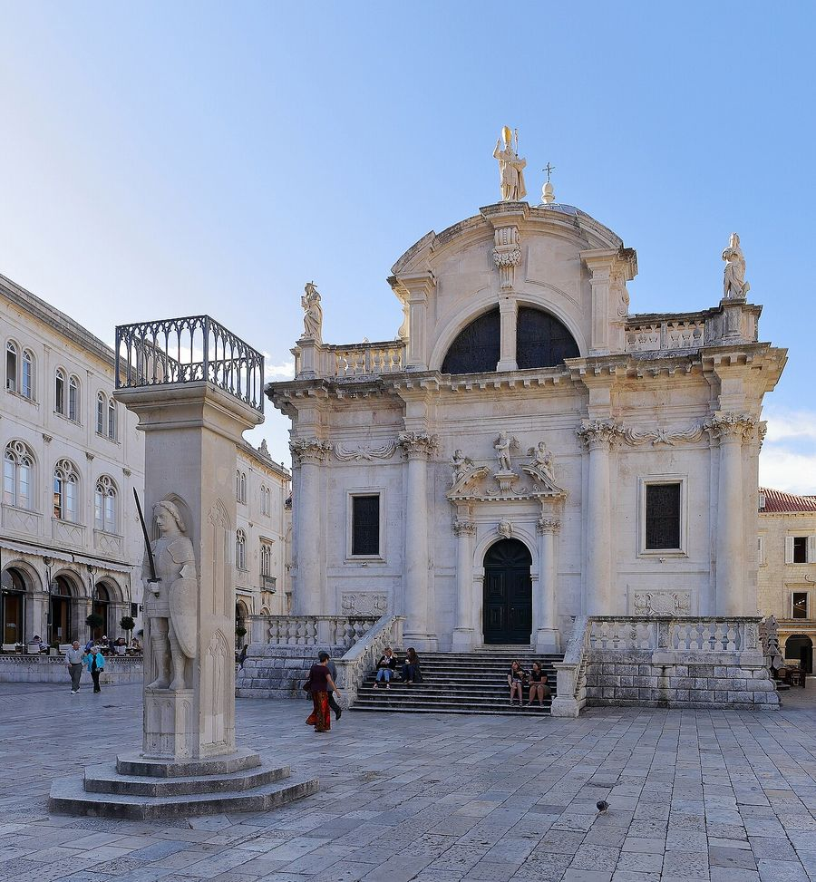
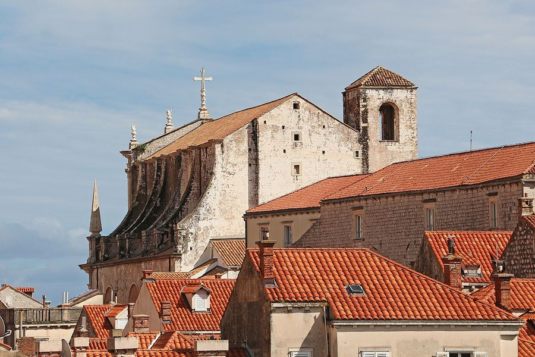
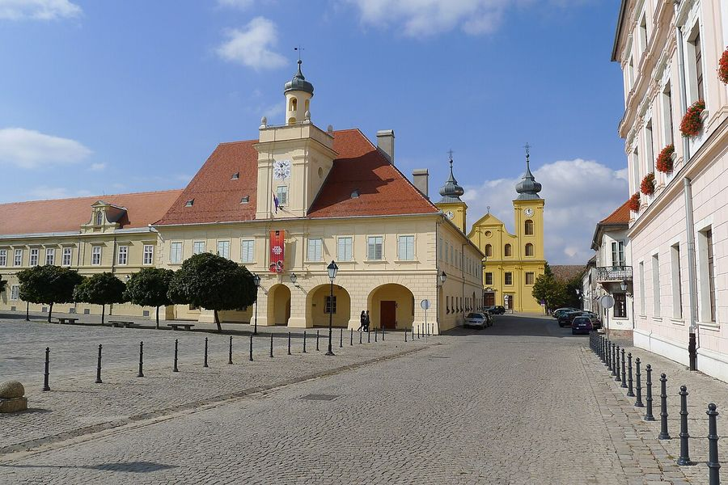
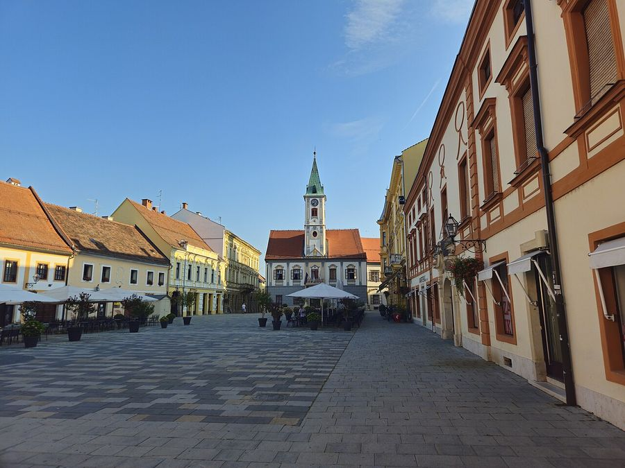
Tipična barokna intervencija u gradskom prostoru jest pil: stup sa slobodnostojećom skulpturom na vrhu. Najmonumentalniji su „kužni pilovi”, podignuti u znak zahvalnosti nakon haranja kuge — u Osijeku (1730., proširen 1784.) i Slavonskoj Požegi (1749., rad S. Graničija); oba su složene grupne kompozicije sa Sv. Trojstvom na vrhu i četiri zaštitnika protiv kuge oko podnožja. Mnogi su pilovi uništeni ili uklonjeni, ali ih nalazimo i u Prelogu, Zagrebu i drugdje.
Nakon edikta o vjerskoj toleranciji Josipa II. (1781.) u krajiškim se gradovima uz katoličke redovito podižu i pravoslavne crkve, pa dvije dominante zvonika na glavnom trgu postaju prepoznatljivo obilježje: Bjelovar (sv. Terezija 1763., pravoslavna Sv. Duha 1792.), Karlovac (Sv. Nikola, arh. Štiler, 1786.), Vinkovci, Petrinja. Za vodiča je to izravna, na terenu vidljiva posljedica jedne zakonske odluke — i poveznica s modulom 3 kolegija K1.
Cinktor je ozidani prostor oko hodočasničke crkve, iznutra raščlanjen arkadama, namijenjen okupljanju mnoštva. To je jedan od najprepoznatljivijih oblika hrvatskoga baroka.
Intenzitet gradnje. U 18. stoljeću u sjevernoj se Hrvatskoj gradi po pedesetak novih crkava u jednom desetljeću. Taj podatak sam po sebi objašnjava zašto je barok ondje dominantan stil urbane i ruralne slike.
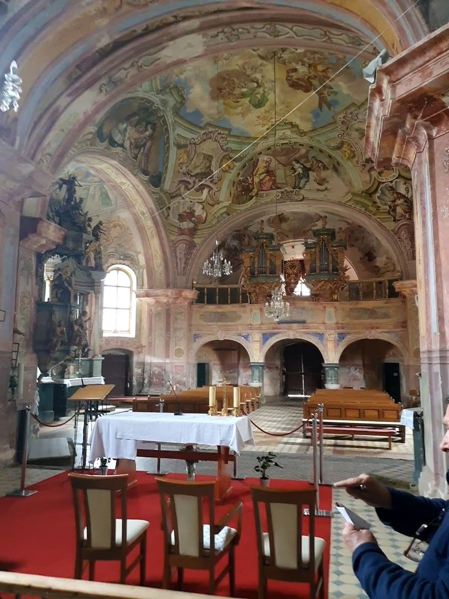
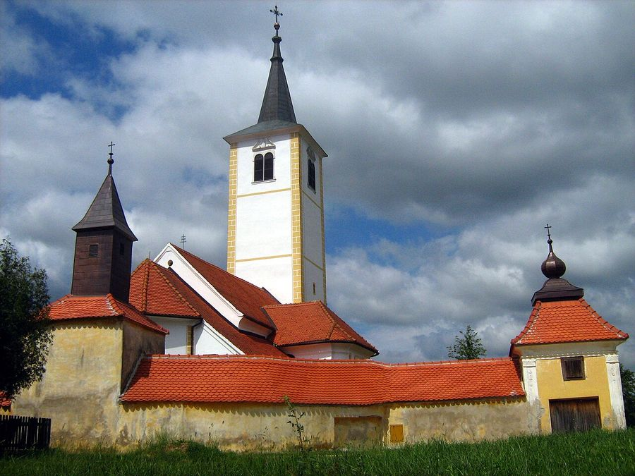
Sačuvano ih je četrdesetak, a po izvorima se zna da su nekoć bile znatno brojnije i da su bitno obilježavale ambijente šumovitih sjevernih krajeva. Pokrivene su šindrom, koja je na lukovicama zvonika nekoć bila i crveno obojena. Izrazitije baroknoga karaktera je njihova unutrašnjost: polikromirani drveni oltari, oslikani tabulati i zidovi — Velika Mlaka, Lijeva Štefanki, Goljak-Bencetić.
Drvene crkve najosjetljiviji su dio hrvatske barokne baštine i najrjeđe se nalaze na turističkim rutama. Za goste zainteresirane za tradicijsko graditeljstvo (Modul 6) one su spona između „velike” umjetnosti i pučke kulture — ali zahtijevaju najavu, dogovoreni pristup i posebnu pažnju prema mikroklimi; velike skupine u malom drvenom prostoru izravno ubrzavaju propadanje.
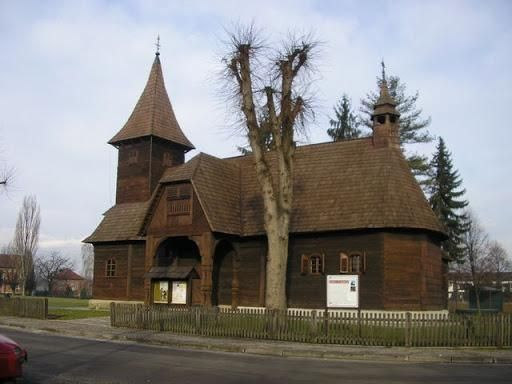
Sačuvano je tridesetak dvoraca hrvatskoga plemstva. Razvojni slijed koji polaznik treba znati:
| Tip | Primjeri |
|---|---|
| Jednokrilni, s tipično baroknim monumentalnim krovištem izjednačenim s visinom zgrade | Gornja Bedekovčina (1750.) — prototip niza zagorskih dvoraca druge polovice 18. st. |
| Trokrilni otvoreni (U-tlocrt) u parku, po uzoru na Versailles | Zajezda (poslije 1740.) — najraniji trokrilni; Vojković u Donjem Oroslavlju, Lužnica, Brezovica |
| Zreli trokrilni s ovalnom dvoranom | Oršić u Gornjoj Bistri (1773.) — jezgra naglašena ovalnom dvoranom koja volumenski istupa iz pročelja i zadire u krovište; pristupna aleja grabova; utjecaj bečkoga rokokoa. Janković u Daruvaru — razigrano pročelje, lomljeno krovište, dvokrako reprezentativno stubište |
| Gradski dvorac | Eltz u Vukovaru — okrenut sporednom stranom prema ulici, glavnim pročeljem prema parku i Dunavu |
| Najveće barokno zdanje | Odescalchi u Iloku (1793.), dvokatni, s vanjskim stubištem i tri etaže arkada prema dvorištu |
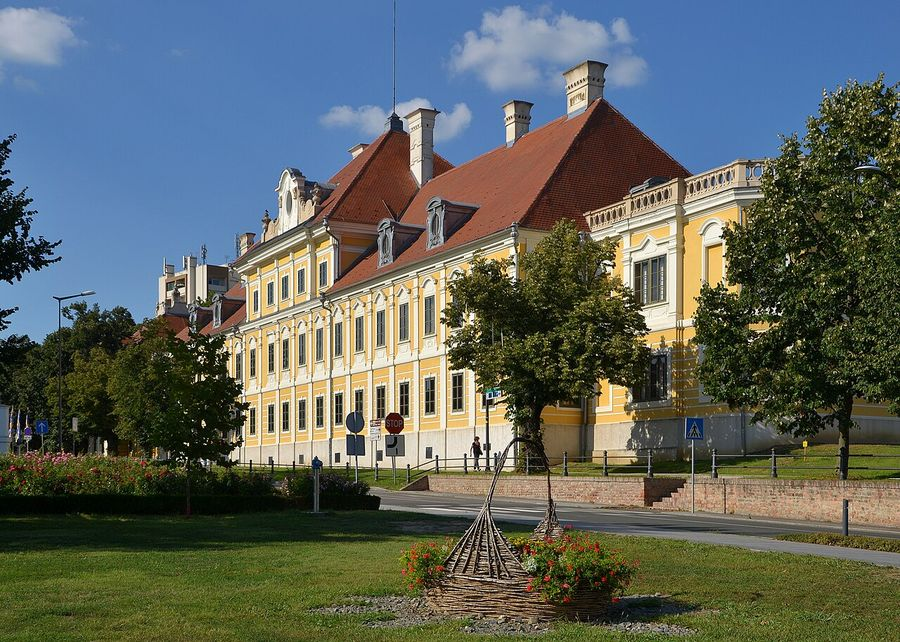
Devetnaesto se stoljeće u Hrvatskoj može omeđiti od pada Venecije (1797.) do raspada Austro-Ugarske (1918.). Dvije okolnosti oblikuju arhitekturu:
Regionalna središta: Rijeka (prva željeznica do mora 1873.), Pula (glavna luka austrijske ratne mornarice), Zadar (administrativno središte Dalmacije), uz njih Split, Šibenik, Sisak, Varaždin, Osijek, Vinkovci, Slavonski Brod.
Zajednička pojava na sjeveru i jugu: ruše se srednjovjekovna i renesansna gradska vrata, zidine i kule te barokne tvrđave. Poticaj nije toliko širenje grada koliko „zdravstveni” (higijenski) razlozi — dokidanje vlage, pripuštanje sunca. Šančevi postaju travnjaci, bastioni perivoji s pješačkim stazama i klupama: tako su preuređeni bastionski obruči Zadra, Šibenika, Splita, Karlovca, Osijeka i Varaždina.
Maksimir je najveći pejzažni pothvat u Hrvatskoj. Biskupska šuma Jurjaves pretvorena je u golem javni park: započet u klasicističkom duhu za biskupa Maksimilijana Vrhovca (otuda ime) kao francuski park s velikom alejom 1812., razvijen je i dovršen u duhu romantizma kao slobodni engleski perivoj (projekt P. Riedla) — s brežuljcima, slikovitim skupinama drveća, jezerima, zavojitim stazama, ali s klasicističkom vrtnom arhitekturom (ljetnikovac, vidikovac, paviljoni arhitekta F. Schüchta). Otvoren 1843., prvi je javni perivoj u jugoistočnoj Europi.
Podno Kaptola biskupski su ribnjaci isušeni i pretvoreni u engleski park po projektu bečkoga arhitekta L. Klingspögla (1830.).
Nakon potresa 1880. Zagreb se gradi kao moderan srednjoeuropski grad. Ključne osobe:
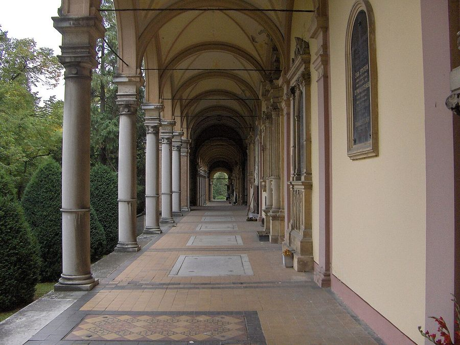
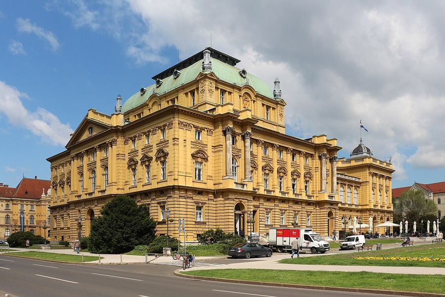
U nizu europskih gradova zeleni je pojas nastao prenamjenom suvišnih utvrda (Lucca, bečki Ring). U Zagrebu nije: Donji je grad zelenim pojasom obrubljen svjesnom odlukom i racionalnim planiranjem, a ne praktičnom nuždom. Usred svakoga trga smještena je po jedna zgrada javne namjene, a Botanički vrt s južne strane ujedno odvaja željezničku prugu od stambene zone. To je najkorisniji interpretacijski alat za vođenje po Donjem gradu.
Tri historicistička sakralna spomenika koja su trajno obilježila svoje gradove: neogotička katedrala u Osijeku (građena opekom, od 1849.), neoromanička đakovačka katedrala (K. Roesner, F. Schmidt, 1866.–1882.) s freskama prema kartonima Overbecka i nazarenaca A. i L. Seitza, te neogotička pregradnja zagrebačke katedrale.
Osijek — Europska avenija i Rijeka primjeri su historicističko-secesijskih gradskih poteza izvan Zagreba.
Prigradska vila druga je karakteristična pojava, osobito na obroncima Sljemena (Jambrišak, vila Okrugljak, 1875.): kasnoromantičarski primjenjuje pučku ornamentiku i tradicionalnu drvenu građu unutar historicističkih okvira, ali u rasporedu unutrašnjosti napušta reprezentativnost u korist građanske udobnosti — balkoni, lože, erkeri, prostori povezani prema funkciji.
Arhitekturu Zagreba između 1815. i 1840. obilježava Bartol Felbinger: adaptacije starijih zgrada, prizemlja za trgovine, stambene zgrade, gradska vijećnica u Samoboru; pripisuje mu se i otmjeni paladijevski dvorac Januševac s okruglom dvoranom i kupolom (atribucija nije dokazana). Njegova je arhitektura skromna, a vrijednost joj je u skladu proporcija i suzdržanosti dekoracije. Felbingerova vlastita kuća na današnjem Jelačićevu trgu (1828.), jedna od prvih dvokatnica, obilježava trenutak u kojem se dotadašnje sajmište (Harmica) počinje pretvarati u glavni trg grada — koji je administrativno ujedinjen tek 1851.
Klasicističku trokrilnu palaču Karla Draškovića otkupili su iliri (1834.); po velikoj dvorani u kojoj su se održavali plesovi i okupljale kulturne ustanove prozvana je „Dvorana” i odigrala je značajnu ulogu u hrvatskom narodnom preporodu.
Bečka secesija u tragu Otta Wagnera širi se nizom zgrada koje projektira Vjekoslav Bastl:
Uz Bastla djeluju Aladár Baranyai, Ignjat Fischer (sanatorij u Klaićevoj, 1908., izvanredno volumenski razveden), Podhorski, Sunko. Sveučilišna knjižnica (Lubinsky, 1913.) izduženim procijepima prozora i golemom bakrenom kupolom stvara sponu između secesijske i ekspresionističke arhitekture.
Uz to: Vila Frangeš u Zagrebu, secesijske kuće u Osijeku i Rijeci, dizajn interijera i primijenjena umjetnost (Modul 4).
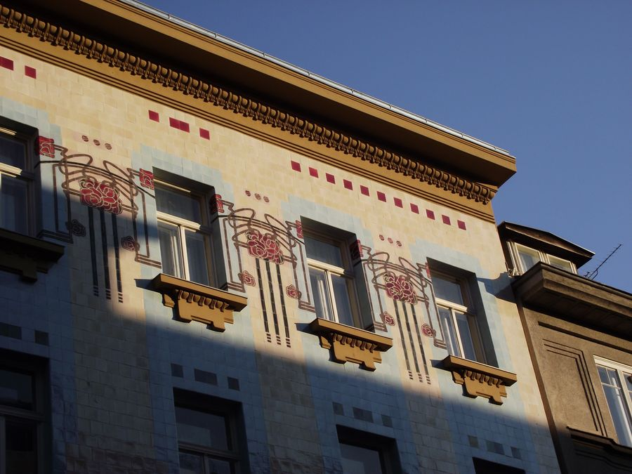
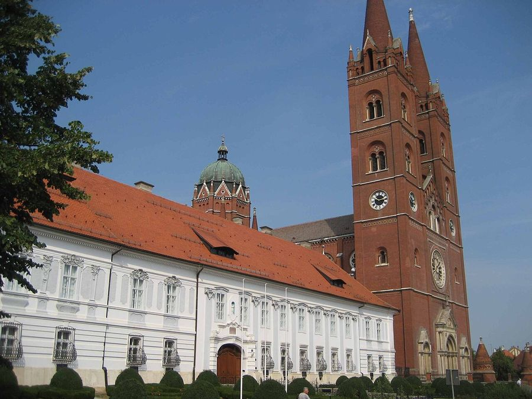
Program uključivanja hrvatske arhitekture u napredne europske tokove objavio je već 1900. Viktor Kovačić člankom „Moderna arhitektura” u časopisu „Život”. Istupajući protiv historicizma, postavlja zahtjev da arhitektura bude „individualna i suvremena”, ali — za razliku od prenaglašenoga subjektivizma u književnom pokretu — i praktična i udobna. Poziva se na Otta Wagnera, čiji je bečki đak, i na englesku obnovu obiteljske kuće.
Kovačićev je doprinos i etički i opsegom: podigao je metodu arhitektonskoga projektiranja na intelektualnu razinu, a odgovornost arhitekta na visoku etičku (javnost rada), te je proširio pozornost struke od uređenja interijera do urbanizma i zaštite baštine — projekti regulacije Kaptola, Dolca i Jezuitskoga trga.
Njegovi se projekti odlikuju purističkom odmjerenošću i reduciranim znakovima povijesne arhitekture prerađenima u novu cjelinu: toskanske asocijacije s ložom u potkrovlju u kući Frank (1910.), venetobizantski volumeni u središnjoj kupolnoj crkvi sv. Blaža (1913.), neoklasicistička kupola i snažan kontrast volumena i šupljine u Burzi (1924.).
| Autor | Djelo | Napomena |
|---|---|---|
| Viktor Kovačić | crkva sv. Blaža, Zagreb (1913.) | Utemeljitelj moderne hrvatske arhitekture; armiranobetonska kupola |
| Ivan Meštrović | Dom likovnih umjetnosti („Meštrovićev paviljon”), Zagreb (1938.) | Kružna građevina; danas Dom HDLU |
| Drago Ibler | Zagrebačka škola arhitekture; „Drveni neboder” (1958.) | Utemeljitelj moderne arhitektonske pedagogije; član skupine Zemlja |
| „Zagrebačka škola” između dvaju ratova | Stjepan Planić, Mladen Kauzlarić, Zvonimir Strižić, Ernest Weissmann | Značajan hrvatski prilog europskoj modernoj arhitekturi tridesetih godina; sinteza funkcionalističkih i organičkih strujanja, još uvijek nedovoljno predstavljena u inozemstvu |
| Vjenceslav Richter | Jugoslavenski paviljon EXPO Bruxelles (1958.) | Također suosnivač skupine EXAT 51 |
| Vladimir Turina, Boris Magaš | sportske i turističke građevine | Stadion Poljud u Splitu (Magaš, 1979.) |
| Nikola Bašić | Morske orgulje i Pozdrav suncu, Zadar (2005., 2008.) | Arhitektura kao instrument i kao svjetlosna instalacija; jedan od najuspješnijih suvremenih hrvatskih zahvata u javnom prostoru |
| Igor Franić | Muzej suvremene umjetnosti, Zagreb (2009.) | Najveća poslijeratna muzejska zgrada u Hrvatskoj |
| 3LHD, Studio Up, Njirić+ | suvremena praksa | Međunarodno nagrađivani hrvatski uredi (npr. Sportska dvorana Bale, Gimnazija u Koprivnici) |
Posebna je pojava jadranska turistička arhitektura 1960-ih i 1970-ih — hotelska naselja u Poreču, Rovinju, Dubrovniku (hotel Libertas), Malinskoj i Bolu. Riječ je o vrijednom sloju moderne arhitekture koji je danas predmet stručne revalorizacije, a gostima je često zanimljiviji nego što bi vodič očekivao.
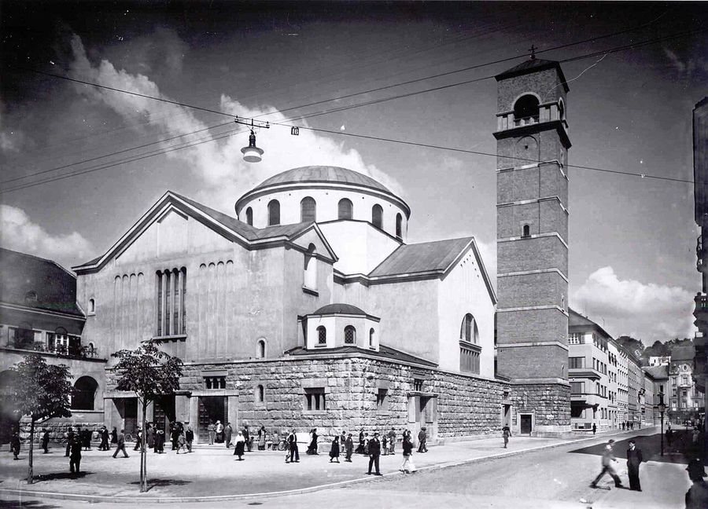
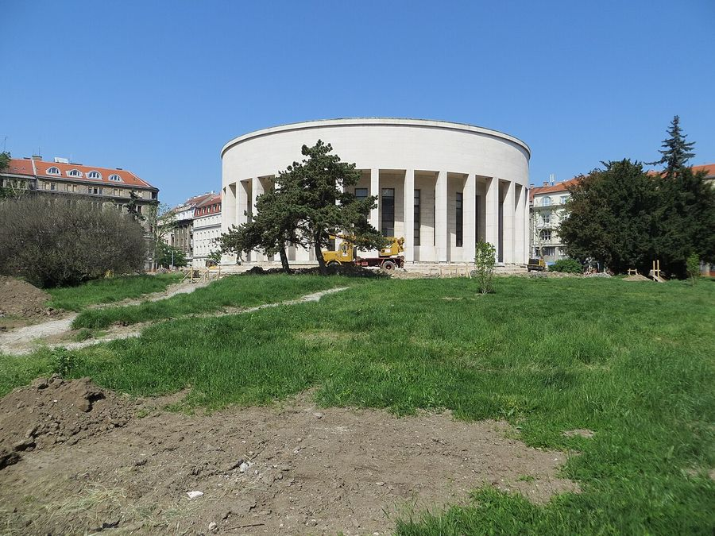
| Pravilo | Obrazloženje |
|---|---|
| Provjeriti raspored bogoslužja i ne ulaziti tijekom mise ili obreda | Crkva je prvenstveno liturgijski prostor |
| Primjereno odijevanje skupine (pokrivena ramena i koljena) | Uvjet ulaska u većini katedrala i samostana |
| Govoriti tiho; koristiti šaptače gdje ih ustanova propisuje | Zaštita drugih posjetitelja i vjernika |
| Poštovati zabranu fotografiranja i uporabe bljeskalice | Zaštita slikanih slojeva i autorskih prava |
| Ne dodirivati eksponate, kamenu plastiku ni oltarnu opremu | Masnoće s kože ubrzavaju propadanje |
| Poštovati najveći dopušteni broj osoba u skupini i najavu posjeta | Većina katedrala i muzeja ima propisan kapacitet |
| Uskladiti se s kustosom / vodičem ustanove ondje gdje je propisan | Neke ustanove dopuštaju samo vlastito vodstvo |
| U malim drvenim i oslikanim prostorima ograničiti veličinu skupine i trajanje boravka | Vlaga i temperatura koje unosi skupina izravno ubrzavaju propadanje polikromije i šindre |
| Kod gradilišta i obnove objasniti zahvat umjesto isprike | Obnova nakon potresa 2020. dio je priče, a ne smetnja |
Prilozi označeni ✓ izrađeni su i ugrađeni u ovaj dokument kao sheme; ostali se izrađuju prema navedenom izvoru.
| Oznaka | Prilog | Izvor | Stanje |
|---|---|---|---|
| V1.1 | Stilska vremenska crta hrvatske arhitekture (1.–21. st.) | vlastita izrada prema Institutu za povijest umjetnosti | u izradi |
| V1.2 | Tlocrtna usporedba: sv. Donat, sv. Križ, sv. Trojica | vlastita izrada | ✓ ugrađeno (1.2) |
| V1.3 | Shema Dioklecijanove palače s današnjim ulicama | vlastita izrada / Geoportal kulturnih dobara | ✓ ugrađeno (1.1) |
| V1.4 | Analitički crtež Radovanova portala | Muzej grada Trogira | Modul 2 |
| V1.5 | Konstrukcijska shema svoda šibenske katedrale | vlastita izrada / Ministarstvo kulture i medija | ✓ ugrađeno kao usporedba pročelja (1.4) |
| V1.6 | Karta „Lenucijeve potkove” | vlastita izrada / Grad Zagreb | ✓ ugrađeno (1.6) |
| V1.7 | Galerija: barokni Varaždin i Tvrđa | Gradski muzej Varaždin, Muzej Slavonije | ✓ fotografije ugrađene (1.5) |
| V1.8 | Karta UNESCO-ovih kulturnih dobara | UNESCO | Modul 5 |
| V1.9 | Zračni snimak s tragovima rimske centurijacije | vlastita izrada / Geoportal DGU | ✓ shema ugrađena (1.1) |
| V1.10 | Fotogalerija „zvonik trogirske katedrale odozdo prema gore” | Muzej grada Trogira | ✓ fotografija + shema otvora (1.3) |
| V1.11 | Tipološka shema dubrovačkoga ljetnikovca | vlastita izrada / Zavod HAZU u Dubrovniku | ✓ ugrađeno (1.4) |
| V1.12 | Usporedna shema: okrugla / kvadratična / bastionska kula | vlastita izrada | ✓ ugrađeno (1.3) |
| V1.13 | Karta drvenih seoskih crkava sjeverne Hrvatske | Ministarstvo kulture i medija | u izradi |
Sve fotografije u ovom dokumentu preuzete su s Wikimedia Commonsa i objavljene su pod slobodnim licencijama (CC0, CC BY, CC BY-SA, GFDL) ili su u javnom vlasništvu. Ispod svake slike naveden je autor, naslov datoteke s poveznicom na izvornu stranicu i licencija — što je uvjet koji te licencije postavljaju za daljnje korištenje.
Ako se ovaj materijal dalje distribuira ili prerađuje, navodi ispod slika moraju ostati uz slike. Kod licencija tipa share-alike (CC BY-SA, GFDL) prerada se objavljuje pod istom licencijom. Slike u javnom vlasništvu nemaju pravnu obvezu navođenja, ali je autor naveden radi akademske urednosti.
Sheme i crteži (tlocrt Dioklecijanove palače, usporedba predromaničkih tlocrta, centurijacija, tipovi otvora, tipovi kula, bazilika naspram dvoranske crkve, trolisno pročelje, L-tlocrt ljetnikovca, barokizacija, Lenucijeva potkova) izvorni su rad izrađen za ovaj modul i objavljuju se pod licencijom CC BY-SA 4.0.
Fotografije su odabrane tako da prikazuju upravo ono što tvrdi opis ispod njih — ne samo
„lijep kadar” istoga spomenika. Ako se neka slika zamjenjuje, mora se zamijeniti i navod izvora
ispod nje; popis svih datoteka s poveznicama nalazi se u
docs/img/modul1/IZVORI.md.
.JPG){kind=link}
{kind=link}
{kind=link}
{kind=link}
{kind=link}
_-_Close-up.jpg){kind=link}
{kind=link}
_02.jpg){kind=link}
{kind=link}
{kind=link}
.jpg){kind=link}
{kind=link}
{kind=link}
{kind=link}
{kind=link}
{kind=link}
{kind=link}
{kind=link}
{kind=link}
{kind=link}
{kind=link}
{kind=link}
{kind=link}
.jpg){kind=link}
.jpg){kind=link}
{kind=link}
{kind=link}
{kind=link}
{kind=link}
{kind=link}
.jpg){kind=link}
{kind=link}
{kind=link}
{kind=link}
{kind=link}
{kind=link}
{kind=link}
_02.jpg){kind=link}
{kind=link}
{kind=link}
{kind=link}
{kind=link}
{kind=link}
{kind=link}
{kind=link}
{kind=link}
.jpg){kind=link}
{kind=link}
{kind=link}
{kind=link}
{kind=link}